Steps 03—05 / Design before implementation
Give every rule a home.
From people and business rules to service boundaries, decisions and contracts. Maya, Arun, Jules and Sam keep the design tied to real tasks.
Step 03 / Domain-driven design
Boundaries that follow the work.
Prepared design, ready for team review. Runtime checks and application implementation remain ahead.
Separate ownership and consistency rules justify the two-service design. Worker replication alone does not.
03 DDD — Context and authority

03 DDD — Aggregates and invariants

03 DDD — Submission and processing

Status, scope and lecturer response
Draft design for team review, grounded in the accepted Team 17 proposal and selected local baseline 885453726d629c524bf511d665311863d9bc70a5. This analysis describes intended models, boundaries and verification obligations. It supplies no runtime proof, migration, application changes or new measurements. The historical proposal baseline 890c5ec is superseded for planning by records/project-decisions.txt, D-01; the proposal remains authoritative for scope.
The lecturer accepted the proposal and asked the team to convince itself, through detailed DDD, that the microservices are suitable. Our considered answer is a Media Management context and a Processing context: owned source intake and access decisions share a model, while attempts, claim validity, recovery and output publication share another. The strongest potential benefit is independent data, migration and release ownership. Worker replicas and asynchronous encoding already exist, so these are inherited capabilities rather than evidence that extraction itself creates scalability. This conclusion remains falsifiable by the checks below. Source: project-roadmap/records/project-decisions.txt, F-01; project-documentation/Team17-Proposal.docx, §§1.4, 2.3–2.4; Media_player/docker-compose.yml, services.worker; Media_player/docs/scaling-notes.md, §4 “Free — already built”.
P-01 Maya, P-02 Arun, P-03 Jules and P-04 Sam are fictional planning personas, not security roles. Playback is demonstrated by the owning account. Publishing means preparing owner-accessible media. Course-team examples introduce no team ownership, learners, LMS, public channel or third client. Jules uses the same API through the CLI; Sam operates deployments and workers rather than a new dashboard. Source: project-roadmap/business-scope.json, persona_note, personas P-01–P-04, business_decisions BS-01–BS-05; Team17-Proposal.docx, §§3.1–3.5.
Ubiquitous language
The public API preserves the existing /upload, /jobs and /auth vocabulary. In the proposed adapter, public job_id and /jobs/{id} refer to a Media Management AssetId. ProcessingJobId is a distinct internal UUID. Documentation and logs must label the two explicitly; a legacy route name must never become evidence of shared aggregate identity. This is a designed compatibility addition, not current baseline behavior. Source: Team17-Proposal.docx, §2.3 “Media Management keeps the routes”; Media_player/app/api/uploads.py, upload_video; Media_player/app/api/jobs.py, get_job_by_id.
| Term | Meaning and boundary |
|---|---|
| Account / OwnerId | An authenticated account owns each asset. Media Management owns identity; Processing holds an opaque OwnerId reference, not a User entity. |
| Asset / AssetId | Stable public identity for an owned stored source and its submission intent. Survives processing retries. |
| SourceRef / SourceRevision | Durable private source object reference and immutable revision. A signed source URL is a temporary capability, not the source identity. |
| SubmissionState | Media Management handoff state: pending, submitted or error. Separate from encode progress. |
| ProcessingJob / ProcessingJobId | Processing aggregate for one AssetId and immutable source revision, including current attempt and authoritative encode state. |
| Attempt / AttemptId | A queued execution reserved during SubmitJob or RetryJob, identified before queue delivery. Claim starts that same AttemptId; the current pointer fences claims, completion and failure. |
| OutputRef / OutputSet | Durable references for the winning attempt’s primary output and optional HLS. Plain uploads require MP4; inherited conversion edits may produce MKV or MP3. Never stored expiring playback URLs. |
| Publish / Playback | Prepare owner-accessible results, then grant short-lived access after owner checks. No public distribution. |
| Reconciliation | Repeated comparison of durable intent/state with handoff or queue delivery to repair gaps. It is not a cross-service transaction. |
| Projection | Public view composed on read from the MM Asset and live owner-filtered Processing result. No persistent encode-state cache, observed_at or projection-version fields are selected. |
Workflow discovery: commands and business facts
Follow the verbs register, upload, submit, claim, encode, complete, inspect, retry and play. A business fact records what became true; a command can be rejected. The table describes intended effects and transaction boundaries, not deployed event messages. Source: Team17-Proposal.docx, §2.3 and §3.2 core workflow; project-roadmap/business-scope.json, UC-1–UC-7.
Attempt reservation, claim and replay behavior follow the authored step 05 contract. Source: project-roadmap/design/05-contracts/content.json, transactions, status-projection and persistence; project-roadmap/design/05-contracts/processing.openapi.json, SubmitJob/RetryJob and schemas Attempt, ProcessingJob, Output, EditOperation.
| Command / actor | Authoritative rule and business fact | Context |
|---|---|---|
| Register / log in — Maya or Arun | Credentials authenticate an Account; account identity determines owner. Retain HTTPS cookie sessions, including a CLI cookie jar; no new public bearer-token flow. | Media Management |
| Upload owned source — Maya or Arun; batch per file — Maya/Jules | Validate supported video and ≤100 MiB; store private source; commit Asset + pending submission intent. AssetAccepted means durable intake, not a completed job. | Media Management |
| SubmitJob — Media Management reconciler/client | Authenticate service and owner; reserve/lock the AssetId submission guard and reject a deleted guard. Check immutable source and ordered operations; commit the job, first queued AttemptId and current pointer together, then publish (job_id, attempt_id) to RQ. | Processing |
| ClaimJob — worker | Atomically claim the already-reserved current AttemptId from queued → processing on a live job. Claim establishes the lease without minting another ID; duplicate or obsolete queue deliveries cannot claim. | Processing |
| Refresh source access — live Processing attempt | Processing validates its own live attempt. Media Management verifies scoped reverse service token, owner, AssetId, SourceRevision and not-deleted Asset; issues a fresh temporary URL. | Both, with local checks |
| CompleteAttempt / FailAttempt — worker | Only the currently valid AttemptId may commit results or failure. A primary output is required for done: MP4 for plain uploads, inherited MKV/MP3 conversion output where requested; HLS remains optional. Stale results remain unpublished. | Processing |
| Get / list / play — owning account | Check owner in Media Management; Processing queries also filter forwarded owner. Translate durable results into owner-accessible playback capabilities. | Media Management front door |
| Retry failed asset — owning account | After replay lookup by retry_request_id, a new retry locks the failed job, reserves a queued AttemptId and updates the current pointer in one transaction. Enqueue that pair after commit. Same source/job; browser calls retry instead of re-uploading. | Media Management → Processing |
| Reconcile — service-local tasks | Repair pending submission, missing queue delivery and expired claims using each service’s own data. Record failures rather than invent progress. | Both, separate duties |
| Scale / release / rollback — Sam | Operational commands produce experiment evidence; they are not new product-domain commands or proof already achieved. | Processing operations |
Local evidence and inherited coupling
The current Job combines owner_id, source_key, output_key, hls_key, status and error, and owner_id has a ForeignKey to users.id. The API creates/reads/retries these rows; workers import the same repository transitions; the reaper imports the same database, models and storage services. This is direct evidence of shared data/model ownership. It does not establish that the current runtime is unreliable or that every deployment must be coupled. Source: Media_player/app/models/job.py, Job; Media_player/app/api/uploads.py, upload_video; Media_player/app/api/jobs.py, get_jobs/retry_job_by_id; Media_player/app/worker/tasks.py, process_job_async; Media_player/app/worker/reaper.py, run_once.
The baseline has separate api, worker and reaper containers and supports worker replicas; a split is therefore unnecessary merely to launch more workers. The proposed contribution is removing shared Job/User schema ownership and making a Processing release possible without a Media Management image or media_db migration. Neither throughput gains nor release independence follows automatically from drawing two boxes. Source: Media_player/docker-compose.yml, services.api/worker/reaper; Media_player/docs/scaling-notes.md, §4; Team17-Proposal.docx, §§1.4, 2.4 AD-01–AD-02, 3.4.
The baseline repository uses expected status conditions but no AttemptId. A late attempt A can return after recovery marks failed and retry B reaches processing; checking only status=processing cannot distinguish A from B. The draft adds attempt fencing and attempt-specific keys. Existing reaper defaults are lease 1800 s, orphan grace 3600 s and interval 60 s, which do not demonstrate proposal recovery within 5 min or missing-queue recovery within 2 min. Configuration, timing and queue-presence logic need explicit validation. Source: Media_player/app/repositories/jobs.py, _transition/mark_stale_failed; Media_player/app/worker/tasks.py, process_job_async; Media_player/app/config.py, Settings.reaper_*; Media_player/app/worker/reaper.py, run_once; Team17-Proposal.docx, §3.4.
The baseline web retry handler calls handleFile(lastFile), although the API already supports stored-source retry. The proposed adapter must close this workflow gap. Edit/delete/admin behavior found in the selected baseline is compatibility work for step 05; it does not justify adding new editor or administration features to the agreed business scope. Source: Media_player/frontend/app.js, jobRetry click handler, lines 410–412; Media_player/app/api/jobs.py, retry_job_by_id/edit_job_by_id/_delete_job_and_storage/admin_router; Team17-Proposal.docx, §3.5.
Boundary alternatives: evidence without weighted scores
No numerical weighting is assigned: requirements, local code and proposed experiment obligations are different kinds of evidence. Two contexts are a design hypothesis, not a scored or measured winner. Logical modules inside Media Management remain useful even though they are not independently deployed contexts. Source: Team17-Proposal.docx, §§2.3–2.4 AD-01, 4.3; records/project-decisions.txt, F-01.
| Alternative | What it can satisfy | Cost / limitation | Assessment |
|---|---|---|---|
| Modular monolith + worker | Same owner workflow, API reuse and existing worker replication; fewer remote failure cases. | A shared schema still prevents independent data ownership. Internal modules could be strong, but independent releases would need demonstrated migration isolation. | Credible simpler alternative if extraction cannot earn its ownership/release benefit. Do not reject it merely on CPU scaling. |
| Two contexts: Media Management + Processing | Keeps owner/asset access local; isolates job/attempt/queue/output model, database roles and Processing migrations. | Adds authentication, live downstream status dependency, pending handoff, source refresh and recovery across a network boundary. | Selected draft because it directly tests AD-01/02 and UC-7 with one principal workflow contract. All benefits pending verification. |
| Four contexts: Identity + Media + Processing + Delivery | Could offer independent identity or delivery products if there were distinct consumers and policies. | More contracts, tokens, remote ownership checks and release units without current independent business rules or actors. | Not justified by owner-only playback and two clients. Revisit only if scope/evidence changes; do not implement speculative services. |
Why Identity, Media and Delivery stay together
Ownership binds intake, listing, retry and playback: each public decision needs the caller and an Asset. Separate Identity and Delivery services would distribute the same owner rule and introduce remote lookups for routine user actions. This is the proposal’s change-cohesion rationale, supported by the baseline’s shared CurrentUser and owner-filtered access; it is not measured proof that these concerns always change together. Source: Team17-Proposal.docx, §2.3; Media_player/app/api/deps.py, CurrentUser; Media_player/app/api/jobs.py, get_jobs/get_job_by_id; Media_player/app/api/hls.py, get_hls_part.
Media Management retains logical account/authentication, asset-intake and delivery modules. The combined context owns the meaning of “this caller may access this source/output.” Processing owns “this attempt may publish this result.” These are different rules. Neither context may join or update the other’s tables. An Account and an Asset are separate aggregates even when they share a context/database; consolidation is not a claim that every write is one transaction. Source: Team17-Proposal.docx, §§2.3–2.4 AD-02, AD-06.
Aggregates, entities and value objects
Aggregate boundaries follow rules that must hold on each authoritative write. Separate database roles enforce ownership; identifier references crossing the boundary are not ORM relationships. Collection sizes and physical table design remain implementation decisions. Source: Team17-Proposal.docx, §2.3 Figure 3 and §2.4 AD-02.
The response projection is a composition, not another stored aggregate or table. Attempt and output rules are reconciled to step 05. Source: project-roadmap/design/05-contracts/content.json, transactions, status-projection and persistence; project-roadmap/design/05-contracts/processing.openapi.json, SubmitJob/RetryJob and schemas Attempt, ProcessingJob, Output, EditOperation.
| Aggregate / object | Owned concepts | Invariants / enforcement |
|---|---|---|
| Account — Media Management root | AccountId/OwnerId; unique account identity; password hash. Session is a temporary credential. | Registration/login retain baseline hashing and expiry checks. No persona becomes a new role. Processing never owns credentials or a User row. |
| Asset — Media Management root | AssetId, OwnerId, filename, SourceRef, immutable SourceRevision, submission intent, immutable ordered operations JSON for derived edits, internal ProcessingJobId link, optional origin AssetId, deletion/tombstone metadata. | Uploader becomes owner; schema/type/size admission checks and durable source precede acceptance. Pending derived Asset, saved operations and request key commit together for replay. Owner/source/operations cannot change under the same submission identity. Deleted assets cannot mint capabilities; source-dependent geometry may fail asynchronously. |
| Public view composed on read — Media Management | MM Asset/submission fields combined with a live owner-filtered Processing result; response-only output access. | No stored encode-state cache or mandatory freshness/version fields. Pending maps to queued/pending; submission error maps to failed/error. Submitted downstream outage or missing job returns 503. Processing authorizes retry against its current state. |
| ProcessingJob — Processing root | Distinct ProcessingJobId; opaque AssetId and OwnerId; immutable source identity; JobState; current AttemptId; result references and safe failure. | Submit first locks the owner-bound Asset submission guard and rejects its tombstone. Unique AssetId acceptance then returns the same job for the same immutable source/operations; conflicting same-owner intent is 409 and another owner is 404. Job state, current attempt and output publication remain atomic. |
| Submission guard — Processing consistency record | processing_db.submission_guards: AssetId key, OwnerId reference, optional internal JobId, deleted_at; may exist before a job. | Submit and CancelAssetJob lock the same owner-bound row. Cancel-first reserves a tombstone; submit-first cancels the associated job. Delayed same-owner submit after cancellation is 410. Keep guards throughout the demo; no MM foreign key. |
| Attempt — Processing entity within job boundary | Reserved AttemptId, attempt number, retry_request_id, queued/start/finish times, lease and outcome; attempt-specific output prefix. | SubmitJob/RetryJob reserves the queued identity and current pointer atomically. Claim must match this reserved ID and never allocates another. Completion/failure/reaper writes fence that current attempt; stale attempts cannot overwrite newer outputs. |
| OutputSet — Processing owned value | Primary OutputRef, optional HLS master/parts prefix, publishing AttemptId. | done requires a valid primary ref matching requested operations: plain upload MP4; inherited convert-to-MKV/MP3 stays compatible. Only winning attempt refs become visible. HLS is optional; never persist signed playback URLs. |
| SourceRef / OutputRef / Revision / Failure — value objects | Stable private object location and immutable revision; bounded safe error; opaque identifiers. | Validate permitted buckets/prefixes and nonempty required values. No arbitrary worker source URL becomes a durable authoritative ref or broad storage credential. |
Context map, authority and translation boundary
Clients are downstream of Media Management’s public API. For intake, Media Management is upstream: it supplies the owned Asset identity/source intent consumed by Processing. For processing results, Processing is upstream of Media Management’s public view composed on read. These direction labels describe model authority per interaction, not one universal hierarchy. The bidirectional HTTP dependency is kept explicit. Source: Team17-Proposal.docx, §2.3 contract table; §3.2 core workflow.
Media Management’s adapter translates Asset → SubmitJob and GetJob result → public legacy /jobs view. Processing exposes a small versioned published language containing identifiers, immutable revision, statuses, safe errors and durable output refs, rather than its ORM objects. Processing maps the request into its own job/attempt model. Clients import no service implementation and hold no database credentials. Source: Team17-Proposal.docx, §§2.3, 3.3 platform engineering, 3.4 reusability.
SubmitJob retains a presigned source_url as the proposal states. The draft excludes the expiring URL from the immutable idempotency fingerprint: changing a capability must not create or conflict with a job for the same owner/AssetId/source revision. A live worker can request fresh access from POST /internal/v1/assets/{asset_id}/source-access using a reverse-direction scoped service token plus owner_id and source_revision. Media Management checks token scope, its own owner, immutable revision and not-deleted state. It does not call Processing to validate attempts or read processing_db. Processing validates its live attempt before requesting access and before committing results. These are designed additions resolving capability expiry; implementation and negative tests are pending.
Media Management has source credentials and output-read/sign permission only. Processing workers have output-write permission and no source credentials; sources are obtained through temporary URLs. Source and output bucket credentials are separated. A valid source URL is a bearer capability until expiry, so local live-attempt validation and short TTL limit issuance but do not retract a URL already issued to an old attempt. Attempt fencing remains necessary regardless of URL expiry. Source: Team17-Proposal.docx, §2.4 AD-05–AD-06 and §3.3 security controls; Media_player/app/services/output_urls.py, MinioOutputUrlSigner.
Asset submission states and outage behavior
Asset submission state expresses durable handoff intent. A pending Asset can be accepted while Processing is temporarily unavailable, then resubmitted idempotently by MM. The legacy public response is 200 with status=queued and submission_status=pending, with no output links. This represents local pending work; it does not assert that a Processing queue record already exists. Source: Team17-Proposal.docx, AD-03–AD-04 and §3.3 Availability and recovery; project-roadmap/design/05-contracts/content.json, status-projection.
pending → submitted follows a successful SubmitJob or duplicate response linking the durable ProcessingJobId. Timeouts leave pending. A lost response after remote commit is recovered by the same AssetId submission. Permanent rejection records submission_state=error and maps to public status=failed, submission_status=error with a safe error; user retry is 409 until the cause is corrected. These compatibility statuses preserve the distinction through submission_status. Source: project-roadmap/design/05-contracts/content.json, status-projection and idempotency.
submitted remains submitted across Processing queued → processing → done/failed and stored-source retries. MM composes status on each read using live owner-filtered Processing results; no persistent last-observed encode-state projection is selected. If Processing is unreachable, return 503; if a linked job is missing, return 503 and record a consistency/reconciliation issue. Do not substitute a cached done result or create another job. Public IDs remain AssetId. Source: project-roadmap/design/05-contracts/content.json, status-projection; processing.openapi.json, GetJob/GetJobs.
| Asset handoff state | Authority | Public response |
|---|---|---|
| pending | MM source and local intent durable; remote acceptance unknown. | 200 status=queued, submission_status=pending; no outputs. |
| submitted | Live owner-filtered Processing read. | 200 Processing status, submission_status=submitted; 503 on downstream outage or missing linked job. |
| error | MM records permanent submission rejection. | 200 status=failed, submission_status=error and safe error; user retry 409 until corrected. |
Processing state, attempt identity and stale completion
SubmitJob locks the owner-bound Asset submission guard, rejects its tombstone, then creates the job, first queued AttemptId and current pointer in one transaction. RetryJob checks saved retry_request_id first; a replay creates nothing. A new authorized retry locks the failed job, reserves the next queued attempt and updates the current pointer atomically. RQ receives (job_id, attempt_id) after commit. Missing queue delivery re-enqueues this reserved pair without allocating a new attempt. Source: project-roadmap/design/05-contracts/content.json, transactions, status-projection and persistence; project-roadmap/design/05-contracts/processing.openapi.json, SubmitJob/RetryJob and schemas Attempt, ProcessingJob, Output, EditOperation.
queued → processing conditionally claims the already-reserved current AttemptId on a nondeleted job; it establishes the lease and does not mint another identity. Completion/failure requires matching current AttemptId, expected processing state, live job and valid claim in one authoritative operation. The reaper invalidates the same attempt before recovery. A stale queue delivery or old result cannot act on a newer reservation, including when the newer attempt is processing. done requires the expected primary output: MP4 for plain uploads; MKV/MP3 for inherited conversion edits where requested. This is a designed improvement over baseline status-only transitions; runtime checks remain pending. Source: project-roadmap/design/05-contracts/content.json, transactions; processing.openapi.json, Attempt/Output/EditOperation and cancelAssetJob.
Write objects under attempt-specific keys. Publish only the winning OutputSet references in the authoritative job transition; stale attempts may leave private unreferenced objects but cannot overwrite winning objects. Reconcile orphan outputs after an agreed grace period. “No duplicate outputs” must be verified as no duplicate committed/public results plus eventual orphan cleanup, not claimed as exactly-once FFmpeg execution or a multi-system atomic commit. Source: Team17-Proposal.docx, §§3.3–3.4 recovery and UC-4.
The lease policy, heartbeat or maximum encode duration, reaper cadence and queue-delivery checks must support the 5-minute worker recovery and 2-minute queue-loss targets without expiring healthy encodes. The baseline reaper tests only RQ job-record existence; a surviving RQ record with lost queue membership must also be covered. Sources older than URL TTL need fresh access; delayed capability issuance must not make expired claims publishable. Source: Media_player/app/worker/reaper.py, run_once; Media_player/app/queue.py, enqueue_job; Media_player/app/config.py, Settings; Team17-Proposal.docx, §3.4.
Conceptual domain events, polling and reconciliation
AssetAccepted, JobSubmitted, AttemptReserved, AttemptClaimed, AttemptFailed, AttemptCompleted and AssetMarkedDeleted name business facts for reasoning, logs and test assertions. No deployed event schema, subscription, broker or cross-context event delivery is promised. SourceAccessGranted is a temporary access/audit fact, not a new durable media entity. Source: Team17-Proposal.docx, §2.4 AD-03–AD-04.
Cross-context coordination uses authenticated HTTP, owner-filtered polling and reconciliation. Media Management repairs durable pending submissions and composes public results on read. Processing repairs durable queued attempts without queue delivery by re-enqueuing their existing (job_id, attempt_id) pair, expires stale attempts and reconciles its orphan outputs. Media Management owns orphan source cleanup from its Asset records; Processing must not retain the baseline source sweeper that queries shared Job.source_key and deletes Media Management sources. Source: Media_player/app/worker/reaper.py, run_once/list_source_keys/source cleanup; Team17-Proposal.docx, §2.4 AD-02–AD-05.
Reconciliation is the selected simple recovery hypothesis. If failure tests show it cannot meet agreed recovery or cannot converge without lost intent, revisit AD-04’s outbox alternative using evidence. Polling and reconciliation neither provide immediate consistency nor eliminate duplicate deliveries.
Ownership matrix
Physical co-location on one PostgreSQL server does not permit cross-database reads or writes. Proposed separate media_db and processing_db roles and migration histories must be tested in both directions. Sharing opaque identifiers does not imply referential integrity across services. Source: Team17-Proposal.docx, §2.4 AD-02 and §3.3 security controls.
| Concern | Media Management authority | Processing authority | Boundary rule |
|---|---|---|---|
| Accounts / authentication | Account and HTTPS cookie session | Service-token validation only; OwnerId reference | No password/session table sharing. CLI uses cookie jar. |
| Asset / source | Owner, intake checks, immutable source, pending handoff, tombstone | AssetId/revision references; fetch via source capability | No Processing source credentials or source-table access. |
| Submission identity | Stable public AssetId; durable pending intent including immutable derived-edit operations | Owner-bound submission_guards row serializes Submit/Cancel; unique AssetId → internal JobId | Cancel by AssetId even without a JobId response; guard tombstones persist throughout the demo. URL excluded from immutable source/operations fingerprint. |
| Job / attempts / result | Owner-facing view composed on read and commands; no persistent encode-state cache | Authoritative job state, valid claims, attempts, durable OutputSet | No Media Management writes to Processing state/tables. |
| Queue / worker / reaper | No queue imports/credentials needed for submit | Own RQ delivery of reserved (job_id, attempt_id), claim lifecycle, missing delivery repair and attempt expiry | REST handoff; queue stays internal to Processing. |
| Playback / HLS | Owner checks; output-read/sign; legacy route adapter | Output-write only for worker; validated published refs | Private durable refs; short-lived capabilities minted on demand. |
| Source cleanup / output cleanup | Unreferenced owned sources; derived source copies | Unpublished or orphan attempt outputs | Each uses its own metadata and scoped storage role. |
| Deployment / migrations | Own image and media_db migration history | Own API/worker/reaper images and processing_db migration history | UC-7 must demonstrate unchanged MM version/migrations. |
| Edit/delete/admin compatibility | Legacy authorization; derived immutable source copy + operations; Asset tombstone and durable cleanup intent | CancelAssetJob by AssetId through shared submission guard; cancel attempts and clean owned outputs | Existing behavior only. MM always calls DELETE /internal/v1/assets/{asset_id}/job; source-dependent geometry can fail asynchronously. |
Compatibility additions and explicit design limits
The selected baseline includes edit, delete and admin routes. Step 05 retains their compatibility without expanding product scope. A derived edit gets an independent immutable source copy. MM commits its pending Asset, immutable ordered operations JSON and request key together before submission; reconciliation replays those saved operations after an outage. Copy/commit failure cannot report 202 acceptance. Schema/type/size checks govern media admission; source-dependent edit geometry failures may become asynchronous failed attempts after 202. Existing authorization and source-state checks still apply. Source: Media_player/app/api/jobs.py, edit_job_by_id/admin_router; project-roadmap/design/05-contracts/public.openapi.json, editAsset; project-roadmap/design/05-contracts/content.json, persistence and compatibility-cost.
For public deletion, MM commits its Asset tombstone and durable cleanup intent before returning 204, then always calls private DELETE /internal/v1/assets/{asset_id}/job. Stable Asset identity permits cancellation even when SubmitJob committed but its response and internal JobId were lost. Processing Submit and CancelAssetJob serialize on the same owner-bound submission_guards row. Cancel-first creates a guard tombstone that rejects delayed same-owner Submit with 410; submit-first tombstones the job, cancels queued/live attempts and schedules output cleanup. Repeated same-owner cancellation is 204 and another owner is 404. Retain guards throughout the demo. MM and P then clean their own objects through repeatable cleanup steps. Source: project-roadmap/design/05-contracts/processing.openapi.json, submitJob and cancelAssetJob; project-roadmap/design/05-contracts/content.json, transactions, persistence and data-inventory.
Tombstoned assets cannot receive new source/playback capabilities, and attempt publication must reject a cancelled or deleted job. An already-issued presigned URL can remain usable until expiry. The guard and cleanup protocol is a designed recovery mechanism, not a distributed storage/SQL transaction or a measured result.
Proposal decisions are retained: AD-01 two services; AD-02 separate databases/roles on one server; AD-03 HTTP submit plus asynchronous queue; AD-04 AssetId idempotency and reconciliation; AD-05 temporary storage capabilities; AD-06 private service-token calls and forwarded owner; AD-07 container deployment on AWS with exact hosting choice outside this DDD; AD-08 fresh demonstration data. The diagrams are logical models, not selected AWS services or runtime deployments. Source: Team17-Proposal.docx, §2.4 AD-01–AD-08.
What would falsify or weaken the two-context decision
Falsification concerns the suitability claim, not automatic scope expansion. Report failed experiments honestly and use them to revise the design or its claimed benefits. No weighted score can replace these observations. Source: records/project-decisions.txt, F-01; Team17-Proposal.docx, §§3.4, 4.3.
- If Processing releases repeatedly require the Media Management image, media_db migration or shared ORM imports, independent ownership has not been achieved; prefer stronger internal modularity or revise the boundary.
- If all required consistency checks need a shared transaction or callbacks into the other service on the critical path, the proposed small translation boundary is insufficient; reconsider responsibilities.
- If pending submissions, lost replies, queue loss or stale attempts cannot converge within proposal targets without extra infrastructure disproportionate to this demo, reassess AD-04 and the simpler modular-monolith alternative.
- If polling/source-refresh network costs prevent the specified status/login targets while comparable baseline tests pass, report the regression and reduce boundary overhead before claiming suitability.
- If worker scaling shows little gain, the scalability target fails but does not by itself prove the data boundary wrong: inherited workers can scale in both designs, and shared-host CPU/storage may dominate.
- If genuinely independent identity or delivery rules/consumers emerge, consolidation may need review; current personas and owner-only scope supply no such evidence.
- If the second client imports service code or needs database credentials, the reuse claim fails even with two deployed services.
Test obligations and evidence still pending
Every row is a required implementation or experiment obligation, not an executed result. Keep exact scenarios and initial targets from the proposal; any permitted target adjustment must be recorded before final tests rather than justified after seeing results. Source: Team17-Proposal.docx, §3.4 introductory paragraph; project-roadmap/business-scope.json, BS-06.
| Obligation | Required evidence / criterion | Source |
|---|---|---|
| Owned intake and playback | Anonymous, invalid-type, >100 MiB and cross-owner read/list/retry/play requests rejected. Test MM and P owner checks separately. | Proposal §§2.3, 3.3; UC-1/3/4 |
| Idempotent remote handoff | Concurrent identical AssetId submissions, changed signed URL, lost reply after commit and Processing outage converge to one job. Owner/revision conflicts rejected; durable pending intent survives MM restart. | Proposal AD-03/04; §3.3 outage case; designed immutable fingerprint |
| Source capability refresh | Queue wait beyond source URL TTL and retries obtain fresh access. Wrong owner/revision, deleted asset, missing/forged/wrong-scope reverse token rejected; no P callback or foreign DB lookup by MM. | Proposal AD-05/06; designed source-access route |
| Claim and attempt fencing | Verify initial submit and each new retry reserve exactly one queued AttemptId before enqueue; stable retry_request_id replay allocates none. Claim retains the reserved ID. Race duplicate/stale queue pairs and reaper/retry/completion; attempt A cannot claim or publish/fail attempt B. | Step 05 content.json, transactions/idempotency; processing.openapi.json, Attempt and RetryJob |
| Recovery and cleanup | Kill worker mid-encode: requeued or failed within 5 min, retry succeeds, no duplicate published outputs. Lose queue entry after job commit: recovered within 2 min, including residual RQ record case. Orphan source/output cleanup stays in owning context. | Proposal §3.4 availability; baseline reaper.run_once |
| Output durability / HLS | Stored references remain valid after URL expiry; fresh owner-checked URLs work; expired/tampered URLs rejected. Plain upload requires MP4; inherited MKV/MP3 conversion requires its requested primary type. Verify optional HLS fallback and playlist/segment authorization. | Proposal UC-2/3, AD-05, §3.3 |
| Projection / public adapter | Public IDs consistently AssetId; internal JobIds distinct. Pending returns queued/pending with no output; submission error failed/error; submitted reads live Processing status. Submitted outage or missing linked job returns 503. Verify no persistent encode cache is required; existing web routes and cookie CLI work. | Step 05 content.json, status-projection/public-routes; processing.openapi.json, GetJob/GetJobs |
| Database / storage isolation | Each role refused access to other DB. Worker source credentials absent; source and output credentials scoped separately; MM cannot write output; worker cannot read arbitrary source. Private endpoint and bucket negative checks. | Proposal AD-02/05/06; §3.3 |
| Legacy edit/delete/admin | Verify pending derived operations survive restart/outage and replay unchanged; independent source survives parent delete. Schema/type/size rejects occur before acceptance; validly admitted edits with unsupported source geometry may fail asynchronously. Race Submit/Cancel in both orders, including lost Submit response: MM cancels by AssetId, guard prevents delayed resurrection, same-owner repeated cancel is 204, other owner 404, and late attempt publication is fenced. Verify cleanup and guard retention throughout demo. | Step 05 content.json, transactions/persistence/data-inventory; processing.openapi.json, submitJob/cancelAssetJob; public.openapi.json, editAsset |
| Independent release | New Processing version deployed plus upload-to-playback smoke ≤10 min; MM container/version and media_db migrations unchanged; previous image rollback demonstrated. | Proposal UC-7, §3.4 deployability |
| Capacity and latency | 30 identical 60 s 720p clips, 1/2/3 workers at 2 vCPU: ≥1.6×/≥2.1× jobs/min, falling median queue wait, zero failed jobs; record CPU/memory. 50 concurrent status users for 3 min p90≤700 ms, <1% errors; 20 concurrent logins separately p90<2 s. | Proposal §3.4 scalability/performance |
| API-only CLI and release quality | Per-file batch outcomes; zero service imports and DB credentials; ≤2 person-days recorded effort. All security negatives rejected; zero fixable HIGH/CRITICAL image findings at release. | Proposal UC-5; §§3.3–3.4 |
Unresolved design checks for steps 04 and 05
The contracts are now authored in step 05. These remaining implementation checks must be settled and tested before runtime claims; none authorizes new business features.
- Choose lease/heartbeat and queue-reconciliation intervals that satisfy recovery targets while tolerating healthy long encodes; tune against the selected local baseline rather than inherited 30/60-minute defaults.
- Validate the selected read-time public mappings and 503 behavior against step 05; finalize submission rejection/backoff implementation. No persistent encode-state cache, observed_at or projection-version fields are selected.
- Finalize reverse-token asset/revision scope, source-capability TTL and logging redaction. Media Management checks only local owner/revision/deletion; Processing owns live-attempt validation.
- Validate the selected AssetId cancellation/guard protocol under submit-first, cancel-first and lost-response races. Exercise derived-source copy crash windows, immutable operations replay and asynchronous geometry failure; verify existing owner/operator checks and cleanup.
- Confirm HLS manifest/segment reference format and owner-checked signing using MM output-read/sign rights and P worker output-write rights.
- Record physical storage policies, hosting choice, rollout sequencing and experiment resources in step 04; this DDD makes no AWS service selection or measured runtime assertions.
Evidence references and how to read the diagrams
P2 denotes project-documentation/Team17-Proposal.docx, sections 1.4, 2.2–2.5, 3.1–3.5 and 4.3–4.4. The reading extract /tmp/team17-review/Team17-Proposal.txt is a convenience; the DOCX is authoritative. Local evidence refers to Media_player files at the user-selected baseline, with named classes/functions/sections rather than unstable upstream links. No GitHub access or upstream comparison was required.
Planning evidence: project-roadmap/business-scope.json (personas, UC-1–UC-7, BS-01–BS-07) and project-roadmap/records/project-decisions.txt (F-01 and D-01). D-03 records the earlier step-02-only turn; the current request explicitly authorizes step 03.
context.mmd shows authority and translation; aggregates.mmd shows logical consistency boundaries rather than physical ER tables; lifecycle.mmd keeps submission and encode state machines separate and shows the attempt fence. All three are draft editable logical diagrams. diagram-manifest.json records their assigned board, pages/shapes and exported previews where available.
Reconciliation reference: project-roadmap/design/05-contracts/content.json, sections status-projection, idempotency, persistence and transactions; project-roadmap/design/05-contracts/processing.openapi.json, SubmitJob/RetryJob/GetJob/GetJobs and schemas Attempt, ProcessingJob, Output, EditOperation. These settle attempt reservation before enqueue, live read-time composition and inherited primary output types. They remain unimplemented design contracts.
Deletion/edit reconciliation: project-roadmap/design/05-contracts/processing.openapi.json, submitJob and cancelAssetJob; public.openapi.json, editAsset; content.json, persistence, transactions and data-inventory. Processing owns submission guards retained throughout the demo; MM owns replayable immutable derived operations. The existing core ownership diagrams remain applicable.
Open the source files
Source locators in this module refer to the following unchanged originals and inspected code.
- Proposal · §§2–3
project-documentation/Team17-Proposal.docx - Report template · §3
project-documentation/original-reference/02 Project Report Template for Practice Project.docx - Lecturer feedback and baseline
project-roadmap/records/project-decisions.txt - Personas and use cases
project-roadmap/business-scope.json - Inherited job model
Media_player/app/models/job.py - Inherited routes
Media_player/app/api/jobs.py - Cookie sessions
Media_player/app/api/auth.py - HLS behavior
Media_player/app/api/hls.py - Worker claims
Media_player/app/worker/tasks.py - Recovery task
Media_player/app/worker/reaper.py - Current deployment
Media_player/docker-compose.yml
Step 04 / Logical architecture
Two services. Clear responsibilities.
Prepared design, ready for team review. Runtime checks and application implementation remain ahead.
Media Management is the public entry point. Processing owns the asynchronous lifecycle and its independently released code.
01 Inherited vs proposed — logical architecture

02 Success sequence — durable intake to owner playback

Step 04: logical architecture designed
Draft architecture prepared for team review on 9 October 2026. All proposed components, decisions and checks are designed, not implemented or measured. This task changes documentation only. The local baseline is Media_player 885453726d629c524bf511d665311863d9bc70a5, selected in D-01; no upstream comparison or Git operation is required.
Team17-Proposal.docx remains the authoritative proposal. F-01 records lecturer acceptance and asks for a detailed DDD suitability argument; acceptance is not runtime proof. Earlier D-03 restricted its own step 02 turn; the current user explicitly authorises steps 03–05. This directory provides the step 04 part only.
P-01 Maya and P-02 Arun own and review their own content. P-03 Jules integrates the same public API; P-04 Sam operates releases and worker capacity. These are fictional planning personas, not application role additions. No shared team ownership, learner access, LMS, public discovery or new dashboard is introduced. Source: P2 §1.2–1.4; F01; BS
Inherited architecture observed in the current code
The browser calls the existing FastAPI entrypoint through the frontend/proxy. API routes handle account sessions, owner checks, upload, job reads/retry/edit/delete, operator compatibility and HLS delivery. Upload stores a source, commits Job, then publishes its ID to Redis/RQ. Job IDs are public today. Source: C03; C04; C11; C12
Separate worker and reaper containers already exist and worker count is configurable. They share the app package, settings, job repository/model, one PostgreSQL DSN and the same storage credentials. jobs.owner_id has a foreign key to users.id. Worker/reaper startup depends on API/migrations. Process separation and worker replication are inherited, not new Project 2 contributions. Source: C01; C02; C05; C06; C10
Existing worker logic claims queued jobs, runs FFmpeg, uploads MP4 and best-effort HLS, then records keys and readable outcomes. The reaper has local stale job and orphan source checks. Its default 30-minute lease and 60-minute orphan grace do not establish the proposal’s 5-minute/2-minute recovery targets. The frontend retry button still reuploads lastFile while the backend supports stored-source retry. Source: C06–C09; C12 lines 410–412
Why two services fit the domain
Asset acceptance, immutable source revision, account ownership and playback authorisation form the user-facing consistency boundary. Identity, Media and Delivery use the same owner and asset rules and change with the product. Keeping them together in MM avoids a distributed permission lookup for every playback request. Source: P2 §2.3; BS; AD-01
Processing has a different lifecycle and consistency boundary: a Job is queued, processing, done or failed; an Attempt needs a valid live claim; only its winning completion can publish Output references. Its FFmpeg/queue/reaper changes do not define an Account or playback policy. The asset and owner IDs are plain references across services. An explicit contract translates Asset into SubmitJob rather than sharing ORM/domain models. Source: P2 §2.3; C02; C05–C07; U04
A modular monolith would reduce communication and operational work and remains a credible simpler alternative if API reuse alone were the objective. The accepted contribution also requires owned migrations and a P-only release; the shared database/code boundary does not demonstrate those. Four services would add identity/media/delivery contracts without distinct enough rules or project evidence to justify their cost. The selected two-service boundary must still be checked against the detailed step 03 model and actual release/security results. Worker scaling is supporting evidence, not the whole DDD argument. Source: F01 F-01; P2 §1.4, AD-01, UC-7
Logical responsibility and dependency map
Each service exposes an application boundary and owns its domain and infrastructure adapters. API, worker, reconciliation and reaper are process roles; PostgreSQL, Redis and object storage are infrastructure; Account/Asset and Job/Attempt/Output are logical models. These categories must not be counted as separate microservices.
MM calls the private P API for submit/status/retry and compatibility operations. P calls MM’s scoped internal source-access API only to refresh source capability. This reverse dependency does not create a circular authorisation lookup: MM checks its own Asset, and P checks live attempts locally. No database transaction is held while waiting for another service. Source: P2 §2.2–2.3; U04
| Component | Responsibilities | Dependencies / release ownership |
|---|---|---|
| MM public API | Accounts/cookie sessions; upload validation; Asset acceptance; owner-filtered public projection composed from live Processing reads; authorised output/HLS delivery; compatibility facade. | Own media_db/source adapters and private P client. MM release. |
| MM pending-submission reconciler | Recover durable pending Asset submissions and correlate internal Job UUID. Submitted status is composed through live owner-filtered Processing reads. | MM-owned pending state and P HTTP contract; no Redis/processing_db access. MM process/release. |
| P private API | Authenticate scoped caller; idempotent submit; reserve queued Attempts at Submit/Retry commit; owner-scoped Job queries and compatibility commands. CancelAssetJob uses stable asset_id and owner-bound submission guard. | processing_db and P-owned Redis producer. P release. |
| P workers | Claim an already-reserved queued Attempt; validate live attempt; source URL refresh; standard MP4/best-effort HLS; inherited edit-only MKV/MP3; conditional output completion. | processing_db, RQ, MM source-access, presigned source GET, output-write storage. P process/release; count can change. |
| P reaper/reconciler | P-owned missing queue and stale attempt reconciliation; cleanup of unpublished attempt outputs under scoped permission. | processing_db, Redis, separate output cleanup role. Source orphan cleanup moves to MM. P process/release. |
| Infrastructure | One PostgreSQL server/two databases; Redis/RQ; private source/output buckets; HTTPS edge. | Shared runtime resources, not independent business services. Exact hosting products deferred. |
Tiers and internal layers that can adapt to the code
Presentation tier: web UI and Publisher CLI. Both use the same HTTPS entrypoint, accounts and workflow, with cookie authentication; neither imports services, accesses databases/queue, or calls P directly. The CLI maintains the existing session with a cookie jar. Source: P2 §1.3, §3.3; C11; U04
Service tier: MM and P expose contract adapters; application operations coordinate repositories and ports; domain objects enforce local ownership, submission and attempt rules. Infrastructure adapters implement PostgreSQL persistence, P HTTP, Redis/RQ, storage signing and FFmpeg. Dependencies point from adapters into application/domain rules; exact module names need not match inherited folders. FFmpeg is a P adapter, not the domain model.
Data tier: durable metadata remains in each service’s owned database; source/output bytes remain in private object storage; Redis is a work transport, not the authoritative Job ledger. These tiers are conceptual and may share one host. Introducing layers does not imply another process, container or microservice. Source: P2 §2.2–2.5; AD-02–AD-03
Data, identifier and credential ownership
The accepted public reference is asset_id. Existing /jobs paths and response compatibility fields may keep their legacy names, but their identifier value represents an MM Asset. P assigns a separate internal Job UUID and correlates it with asset_id. No client may use or depend on that internal UUID. Fresh demonstration data avoids reinterpretation of historic public job links. The owner step 05 OpenAPI specifies exact fields/errors. Source: U04; AD-08
MM owns durable Asset/submission/correlation state and composes the public read projection from live owner-filtered Processing reads for submitted assets. No stored encode-state/output-ref cache or observation/freshness fields are mandatory. P remains authoritative for Job state and winning durable output refs. Pending Assets return status=queued and submission_status=pending with no output links; submitted dependency failure or a missing Job returns 503 rather than cached success. owner_id and source revision are immutable submission references; no cross-service foreign keys or database reads. Source: P2 §2.3; AD-02; K05 status-projection, persistence; K05P GET /jobs
| State / permission | Owner | Boundary rule |
|---|---|---|
| Account; password/session identity | MM / media_db | P holds owner ID reference, no account copy or user FK. |
| Asset; immutable source revision; pending intent; Job correlation | MM / media_db | Intake and submission/correlation records are durable. Compose submitted status and playback refs from live P reads; no mandatory stored encode-state cache or freshness fields. |
| Job; Attempts; published Output refs | P / processing_db | asset_id unique submit key; locally enforced claims; only winning attempt publishes. |
| Owner-bound submission guard / tombstone | P / processing_db | Submit and stable asset-ID Cancel lock the same guard; deleted guard rejects delayed submission; retained throughout demo. |
| Source objects | MM source role | MM writes/reads/signs; P workers have no source credentials and use short-lived GET capability. |
| Output objects | P output-write role; separate cleanup role | Attempt-specific keys; worker writes only; cleanup belongs to P, not source bucket. |
| Playback signing and HLS playlist read | MM output-read/sign role | Separate from source role and output-write credentials; owner authorisation before issuance. |
| Queue/task payload | P only | Redis/RQ credentials never in MM or clients; Job ledger in processing_db. |
| Migrations | Respective service | Separate histories and scoped roles; no runtime superuser or cross-database access. |
Success path, durable submit and idempotent transport retry
1. Owner logs in through /api/auth; browser and CLI keep the existing HTTPS cookie session. MM validates declared/sniffed video type and measured ≤100 MiB size, writes the private source, then commits Asset(pending), immutable source descriptor and the owner/operation-scoped request key together. New clients retain Idempotency-Key across an uncertain upload response; legacy callers may omit it without a replay guarantee. Storage and SQL are not atomic, so MM owns staged-object and source-orphan cleanup. Source: C03; AD-03; K05 idempotency, transactions
2. MM calls POST /internal/v1/jobs with service token, verified X-Owner-Id, asset_id, matching owner_id/source.asset_id, immutable source descriptor, optional ordered operations and fresh source_url/expiry. P commits Job plus first queued Attempt under unique asset_id before enqueueing (job_id, attempt_id) to RQ. The request fingerprint excludes URL and expiry. MM records only internal correlation/submission acceptance after acknowledgement. The client receives 202 {job_id: asset_id}. Source: AD-03–AD-04; K05P SubmitJob
3. A lost acknowledgement leaves durable MM intent pending. Replay with the same immutable request and a refreshed URL returns the existing Job/current Attempt; it never creates a second Attempt or implies RetryJob. Missing delivery of a committed queued Attempt is P reconciliation work. During a P outage, valid durable upload is still 202; polling that unconfirmed Asset returns 200 status=queued, submission_status=pending and no output links. This is an MM compatibility state, not proof P has queued a Job. Permanent submission rejection becomes failed/error with a safe reason. Source: AD-03–AD-04; K05 status-projection
4. An RQ worker conditionally claims the already-reserved current queued Attempt of a live Job; claim does not mint a new Attempt. It checks live attempt authority locally. The initial source URL is transient; before download or after expiry it can obtain ReadSource through POST /internal/v1/assets/{asset_id}/source-access using the separate reverse token, X-Owner-Id and revision. MM checks its own owner, revision and nondeleted Asset without querying P. The designed source GET grant expires after 15 minutes. Standard intake produces MP4 plus best-effort HLS; MKV/MP3 exist only for inherited edit conversion compatibility. Attempt-specific output writes precede conditional winning completion and durable reference publication. Source: AD-05; K05 storage, transactions; K05M source-access
5. Owner GET /api/jobs/{asset_id} resolves the internal Job correlation and composes a public response from a live owner-filtered P read. List pages MM Assets, then batches submitted Asset IDs by owner. A submitted P outage or missing durable Job returns 503; MM neither serves cached done nor fabricates a new Job. Completed responses translate durable primary output refs into newly signed 15-minute output URLs and an MM HLS route when available. No mandatory encode-state cache, freshness fields or stored expiring URLs. [K05 status-projection, public-routes; K05U GET /jobs]
Owner-only MP4 and HLS playback
An owner check governs status and each MM HLS request. MM obtains winning durable refs through live P reads for a submitted Asset; unavailable/missing P state returns 503. A fresh primary-output GET URL is a temporary bearer capability, with a 15-minute design default, and never durable state. Standard upload output is MP4; MKV/MP3 primary outputs are inherited edit conversion compatibility only. Cross-owner API rejection and signed URL expiry/tamper are separate checks. Output buckets have no public-read/list policy. Source: AD-05; K05 storage, status-projection; C09–C10
MM /jobs/{asset_id}/hls/{path} validates the path within the winning output prefix returned by a live owner-filtered P read for that asset. It reads/serves master and rendition playlist bodies with private, no-store semantics, keeping relative URIs anchored at the authorised MM route. It signs and redirects segments individually. Redirecting a playlist itself would change its relative base to object storage and break HLS; preserve the inherited working pattern. Cookie sessions let the browser revisit MM routes; real browser playback, HTTPS signing endpoint and applicable object endpoint/CORS behaviour require implementation checks. Source: C09 lines 14–28, 80–121; AD-05
Existing client routes and designed compatibility additions
The web and CLI use the existing /api/auth, /api/upload and /api/jobs routes. Public /jobs identifiers mean asset_id. New clients retain an owner/operation-scoped Idempotency-Key for upload, retry and edit. Retry uses the stored source through /jobs/{asset_id}/retry, replacing the current browser reupload. P first looks up retry_request_id: replay returns the existing current result without another transition. A new retry is allowed only from failed and atomically reserves the next queued Attempt/current pointer before enqueueing. An uncertain downstream retry returns 503 and the client retains its key. Source: C04; C12; K05 idempotency, transactions; K05P RetryJob
Preserve inherited edit/delete/admin route compatibility in step 05 rather than silently dropping routes already used by the selected baseline. Edit creates a derived MM Asset whose immutable source is copied from the authorised published output, so deleting the original cannot destroy a borrowed source. It submits with a new asset_id; processing-request details are immutable in its fingerprint. This source-copy design and new Asset relationship are designed additions; current code instead borrows the original output key. Source: C04 edit_job_by_id, _delete_job_and_storage; U04 Preserve only existing edit operation variants, including convert to MKV/MP3; these are not added standard UC-2 outputs or new crop/clip widgets. [K05 public-routes; K05U EditOperation] MM persists the derived Asset’s immutable operations JSON alongside its independent source descriptor and pending intent, so an outage/replay cannot silently submit a plain transcode. Schema/type/size admission failures are rejected before 202; source-dependent edit geometry checks may fail asynchronously as a visible failed Attempt. [K05 persistence, transactions; K05U edit]
MM atomically records its Asset tombstone and cleanup intent before 204, then always cancels by stable asset_id through DELETE /internal/v1/assets/{asset_id}/job with the target owner. A lost Submit acknowledgement therefore does not require a known internal Job UUID. P submission_guards serialises Submit and Cancel using the same owner-bound row: Cancel-first records a tombstone that rejects delayed same-owner Submit with 410; Submit-first cancels/tombstones the Job and schedules owned-output cleanup. Retain guards throughout the demonstration environment. Repeated same-owner cancellation is 204; another owner is 404. MM denies new source/playback grants and cleans its own sources after cancellation prerequisites; P cleans only its outputs. Existing signed capabilities last until expiry/object removal. MM operator routes forward each target owner through scoped APIs, without unscoped Processing operations. Detailed cancellation/cleanup mechanics and tests remain step 06 work. [K05 internal-contracts, persistence, transactions; K05P CancelAssetJob]
Shared runtime limits and designed quality checks
The logical reference deployment uses one small shared host and one PostgreSQL server with two databases. It has shared host, DB server, queue and storage failure boundaries; no multi-zone/multi-region failover is promised. Separate containers and two databases establish ownership and release boundaries, not physical fault isolation. MM’s P-outage intake scenario assumes MM/media_db/source storage are still functioning. Source: AD-02; AD-07; P2 §3.5
Video encoding still competes for finite CPU/memory/I/O. The 1/2/3-worker experiment (30 identical 60-second 720p clips; 2 vCPU each) must record resources and sufficient aggregate capacity. Proposal targets (2 workers ≥1.6×; 3 workers ≥2.1× jobs/minute; decreasing median queue wait; zero failures) are future checks. API polling target p90 ≤700 ms/<1% errors at 50 concurrent callers for 3 minutes and login p90 <2s at 20 concurrent logins also remain unmeasured. Source: P2 §3.4; BS UC-6
Step 06 owns durable recovery implementation details: polling cadence, timeouts/backoff, claim/attempt fencing, cleanup races and measured recovery windows. Step 07 owns exact AWS product/SKU, network deployment and cost choices. This step documents logical constraints and validation intent; it neither implements those later steps nor declares their targets met.
Representative use-case and decision traceability
Business IDs and personas are retained from business-scope.json. The table links the logical design to representative observable checks, not completed evidence. Jules follows the same owner workflow through the published API; Sam remains an operator stakeholder. Source: BS; P2 §3.2–3.4
| Use case / persona | Logical route / ownership | Decisions | Implementation evidence to collect |
|---|---|---|---|
| UC-1 / P-01 Maya, P-02 Arun, P-03 Jules | MM auth+intake → pending Asset → P SubmitJob | AD-01–AD-06, AD-08 | Valid source ≤100 MiB; invalid/anonymous rejection; source+asset durable during P outage; public Asset ID. |
| UC-2 / platform for owners | P claim → source capability → FFmpeg → winning refs | AD-01, AD-03–AD-05 | MP4 playback, best-effort HLS/fallback, attempt fencing, readable failure. |
| UC-3 / owner-viewers | MM owner lookup + live P reads → fresh output URL / MM HLS routes | AD-01–AD-02, AD-05–AD-06 | Pending queued/pending; submitted status from live P; dependency/missing-job 503; cross-owner rejection; expiry/tamper; real browser HLS. |
| UC-4 / Maya, Arun | MM retry → owner-scoped failed-state RetryJob | AD-03–AD-06 | Same source/revision, no browser reupload; retry_request_id replay deduplicates a reserved queued attempt; wrong owner/state rejected. |
| UC-5 / Maya; Jules integrates | CLI cookie jar → same HTTPS MM workflow per file | AD-01, AD-03–AD-06, AD-08 | Every file outcome; no service imports/DB credentials; actual effort/size. |
| UC-6 / Sam | P worker count 1 → 2 → 3; MM unchanged | AD-01, AD-07–AD-08 | Fixed backlog, 2-vCPU caps, measured throughput/wait/failures/resources; existing replication not claimed as new. |
| UC-7 / Sam | Versioned P-only container release/rollback | AD-01–AD-02, AD-06–AD-08 | MM image/media_db unchanged; smoke pass and timed ≤10-minute target; step 07 deployment. |
AD-01 · Extract Processing as the only new service
Status: designed; not implemented. Owner: Long (architecture documentation); Ibrahim (implementation review); team review pending.
Context: The baseline has separate worker processes, but API, workers and reaper share Job code, credentials and one user-linked database. F-01 asks the team to justify suitable microservices in detailed DDD. Candidate contexts are Identity, Media, Processing and Delivery.
Decision: Combine Identity, Media and Delivery in Media Management (MM); extract Processing (P) as one separately owned/deployed service. MM owns Account, Asset and owner access. P owns Job, Attempt, Output, asynchronous queue/FFmpeg and job reconciliation. Worker/reaper containers are processes within P, not further business services. Separate lifecycle, consistency rules and change ownership justify the boundary; CPU profile supports it but is not its sole justification.
Sources: P2 §1.4, §2.3, AD-01; F01 F-01; C01; C02; C06; BS. Use cases: UC-1, UC-2, UC-3, UC-5, UC-6, UC-7.
Planned implementation checks; no runtime or measurement evidence produced by this documentation task.
| Record field | Details |
|---|---|
| Alternatives considered | Keep a modular monolith: simpler calls and transactions, but retain common release/data ownership unless the product only needs internal reuse. Split Identity, Media, Processing and Delivery: small responsibility sets, but adds three boundaries, identity/playback coordination and releases for this team. |
| Positive consequences | Asset acceptance and owner access remain coherent without distributing account rules. P can change FFmpeg, attempt rules and migrations without importing MM models or altering media_db. Both web and CLI reuse the same public workflow. |
| Negative consequences | Extra network contract, authentication and eventually consistent status add work. Same host CPU, storage and database server remain shared failure/resource boundaries. Small team still coordinates two deployable services; service separation alone does not ensure faster processing. |
| Validation to perform | Review aggregates and invariants against detailed step 03 DDD and F-01. Verify MM cannot import P ORM/domain modules or query processing_db; P cannot read media_db. Release P with unchanged MM image/media_db migrations; run web/CLI upload-to-playback contract smoke checks. Compare 1/2/3 worker throughput under CPU caps; record results rather than claim an unmeasured improvement. |
AD-02 · Two service databases on one PostgreSQL server
Status: designed; not implemented. Owner: Long (architecture documentation); Ibrahim (implementation review); team review pending.
Context: Current jobs.owner_id references users.id within the shared database; API and workers use the same DSN. The proposed services need enforceable data and migration ownership with low operational cost.
Decision: Use one PostgreSQL server with media_db and processing_db. MM runtime role can connect/use only media_db; P API, workers and reaper roles can access only processing_db with permissions appropriate to their process. Each service has its own migration history and migration role limited to its database. Revoke default cross-database CONNECT and broad privileges; runtime roles are not superusers and cannot create roles/databases. owner_id/asset_id in P are opaque identifiers, not foreign keys into MM. No federated query, FDW or shared ORM table.
Sources: P2 AD-02, §2.3; C01 lines 39, 76, 128; C02 lines 50–53. Use cases: UC-1, UC-2, UC-3, UC-7.
Planned implementation checks; no runtime or measurement evidence produced by this documentation task.
| Record field | Details |
|---|---|
| Alternatives considered | One database and shared tables: cheap, but permits cross-service joins and couples migrations. Two schemas with broad roles: less setup, but weaker separation if grants remain shared. Separate PostgreSQL servers: independent capacity/failure isolation at greater demonstration cost. |
| Positive consequences | Database permissions make service ownership testable. One server lowers operating cost and setup effort. Independent schema changes are possible within published contract compatibility. |
| Negative consequences | One server outage affects both databases; connections, CPU and I/O compete. Cross-service consistency requires API checks and reconciliation instead of SQL joins. Separate database names alone are insufficient without grants and role checks. |
| Validation to perform | For each runtime/migration credential, prove own allowed operations and denied other-database connection/table access. Inspect role grants for superuser, default CONNECT, public schemas and cross-database extensions. Apply each service migration independently without the other service credentials or migration execution. |
AD-03 · Synchronous durable submission; asynchronous Redis/RQ processing
Status: designed; not implemented. Owner: Long (architecture documentation); Ibrahim (implementation review); team review pending.
Context: Clients need an immediate accepted-item reference while FFmpeg is long-running. Redis/RQ already queues and executes processing. Upload acceptance must remain durable during a P outage.
Decision: MM writes the immutable source then commits Asset(pending) plus intake request-key intent before attempting synchronous authenticated SubmitJob. P commits a durable queued Job plus first queued Attempt in processing_db; enqueue (job_id, attempt_id) to Redis/RQ only after commit. Queue publication failure leaves accepted recoverable work. MM returns 202 {job_id: asset_id} after durable intake. Pending owner reads return 200 status=queued, submission_status=pending, with no playback links; this is the public intake projection, not confirmation of a P Job. Submitted owner/list reads use live P queries; P dependency outage or a missing submitted Job returns 503. No mandatory stored encode-state cache/freshness fields. Bounded timeouts preserve MM responsiveness. MM never accesses Redis; no event broker.
Sources: P2 AD-03, §3.3–3.4; C03; C06; C08; U04; K05 owner content and OpenAPI, reconciled 9 October 2026. Use cases: UC-1, UC-2, UC-3, UC-5.
Planned implementation checks; no runtime or measurement evidence produced by this documentation task.
| Record field | Details |
|---|---|
| Alternatives considered | Synchronous FFmpeg in upload request: simpler chain, but long requests and no independent worker workflow. New event broker between services: decouples delivery but adds new infrastructure/contract operation. Publish directly from MM into P queue: avoids HTTP but exposes worker import paths and couples clients to P internals. |
| Positive consequences | Immediate owner-visible asset reference and durable intake across P outage. Reuse existing RQ/FFmpeg without a new transport. Only P owns task payloads and queue permissions. |
| Negative consequences | DB commit and enqueue are separate actions; reconciliation is necessary. Status polling and submit calls add network latency. Pending admission can build backlog while P is unavailable; durability does not guarantee a finish time. |
| Validation to perform | Stop P, upload valid content, restart MM and verify asset/source/pending survive; restore P and observe submission. Lose queue entry after committed Job and verify eventual enqueue without a second Job. Verify upload returns before FFmpeg completes and MM has no Redis credentials. Measure proposed polling/login targets after implementation; do not infer them from diagram. Verify pending reads are queued/pending without outputs, while submitted dependency failure/missing Job is 503. Verify SubmitJob commits Job and first queued Attempt before enqueue, and claim starts that same Attempt. |
AD-04 · Idempotency by asset_id with durable reconciliation
Status: designed; not implemented. Owner: Long (architecture documentation); Ibrahim (implementation review); team review pending.
Context: A submit response may be lost after P commits. MM must retry an accepted asset without creating an extra job, and database/queue writes cannot form one distributed transaction. The existing reaper handles some local gaps, not the new MM-to-P pending gap.
Decision: P enforces unique asset_id and an immutable canonical fingerprint of owner, source revision/digest/type/size and ordered operations. source_url and its expiry are excluded. Same-request SubmitJob replay returns the existing Job/current Attempt; changed owner/payload is rejected. MM durably retains pending intent/correlation and resubmits by asset_id. New web/CLI uploads and edits use owner/operation-scoped Idempotency-Key to avoid creating duplicate Assets before SubmitJob. P reserves first queued Attempt in Submit commit. For RetryJob, look up retained retry_request_id before state checks; a replay returns the current result without a new Attempt, while a new failed-state retry atomically reserves next queued Attempt and updates the current pointer before enqueue. Workers claim only the already-reserved current queued Attempt; they do not mint it. P owns missing-delivery/stale-attempt reconciliation and winning-completion fencing, publishing durable refs under attempt-specific keys. MM composes submitted public projections from live P reads, not a required stored status cache. No distributed transaction or event broker. P submission_guards stores an owner-bound row per asset_id and serialises Submit/Cancel on that row; stable asset-ID cancellation can precede Job creation and tombstones reject delayed Submit. Guards remain throughout the demo. MM persists immutable derived-edit operations with the pending Asset for faithful Submit replay.
Sources: P2 AD-04, §3.3–3.4; C05; C06; C08; U04; K05 owner content and OpenAPI, reconciled 9 October 2026. Use cases: UC-1, UC-2, UC-3, UC-4, UC-5.
Planned implementation checks; no runtime or measurement evidence produced by this documentation task.
| Record field | Details |
|---|---|
| Alternatives considered | Distributed transaction across both DBs and Redis: complex and incompatible with a small HTTP/RQ boundary. Transactional outbox/event relay: strong delivery bookkeeping, but adds implementation and operations not selected in the proposal. Blind retry without durable intent/uniqueness: may lose submissions or create duplicate work. |
| Positive consequences | Safe submit replay after timeout without a second Job. Durable pending record covers P outage independently of P reaper. No cross-service transaction or event broker; one asset-to-job correlation. Attempt isolation prevents a late attempt from replacing the current published output. |
| Negative consequences | Submission and queue delivery are eventually reconciled; no exactly-once execution is promised. Submitted reads need live P availability and return 503 on dependency failure. Reconciliation scheduling, stale-attempt fencing and cleanup require step 06 implementation. A pending row is not proof of delivery; logging and meaningful outcome visibility remain necessary. |
| Validation to perform | Concurrently replay same asset_id with fresh source URLs: one Job and unchanged identity. Change owner/revision/request under same asset_id: reject without modifying existing job. Drop SubmitJob response after commit: pending MM replay obtains existing Job. Kill MM between intake/submit/ack steps and verify pending work remains recoverable. Race late and winning attempts: only winning refs published; orphan attempt outputs not served. Specify and exercise recovery timings separately in step 06; inherited reaper defaults do not satisfy proposal targets by assertion. Check stable upload/edit request keys select one Asset; changed fingerprint conflicts. Replay retry_request_id after the Job finishes: no new Attempt; changed new retry from nonfailed is 409. Verify claim/enqueue use the current durable attempt_id created at Submit/Retry commit. Race Submit/Cancel in both orders, including lost Submit acknowledgement: cancel by asset_id succeeds, no delayed resurrection, guard remains throughout demo. Restart pending derived edit after source copy: replay retains identical ordered operations; source-dependent geometry failure becomes visible asynchronous failure. |
AD-05 · Presigned source reads and private output delivery with separate credentials
Status: designed; not implemented. Owner: Long (architecture documentation); Ibrahim (implementation review); team review pending.
Context: Today API and worker MinIO clients use the same bucket credentials. A source URL minted at submit can expire while queued; storing expiring playback URLs would also make successful results brittle.
Decision: Keep private source and output stores with separate permissions. MM source role writes/reads/signs sources; workers receive no source credentials. SubmitJob includes transient source_url and expiry per proposal, both excluded from the immutable fingerprint and not durable source truth. ReadSource grants a single-object GET URL with a 15-minute design default via MM POST /internal/v1/assets/{asset_id}/source-access: reverse scoped service token, X-Owner-Id and revision. MM checks its own owner, revision and nondeleted Asset, accepting no arbitrary URL/bucket/key. P checks its live Attempt locally; no MM callback/cross-DB lookup. Workers validate configured storage origins/prefixes and avoid arbitrary redirects. Workers write only attempt-specific outputs; P cleanup has separate scoped permissions. MM has output-read/sign only, including playlist reads. P persists winning durable Output refs; MM composes submitted responses from live P reads and signs fresh 15-minute primary-output/segment URLs without storing them. Standard intake produces MP4 plus best-effort HLS; MKV/MP3 primary outputs are inherited edit compatibility only. HLS playlists remain on MM owner routes; segment redirects are freshly signed.
Sources: P2 AD-05, §3.3; C07; C09; C10; U04; K05 owner content and OpenAPI, reconciled 9 October 2026. Use cases: UC-1, UC-2, UC-3, UC-4.
Planned implementation checks; no runtime or measurement evidence produced by this documentation task.
| Record field | Details |
|---|---|
| Alternatives considered | Shared bucket-wide credentials: easy reuse but worker can access MM-owned source objects. Public source/output buckets: avoids signing but breaks owner access and private storage. Store one submit-time URL permanently: simple payload but queue delay invalidates work. |
| Positive consequences | Workers cannot list/read the source bucket through long-lived credentials. Queue delay and retry can obtain a fresh URL for the same source revision. MP4 data/segments can flow directly from object storage, while HLS playlists retain correct API-relative paths. Output references survive playback URL expiry. |
| Negative consequences | A presigned URL is bearer access until expiry; owner checking governs issuance, not every subsequent object GET. Workers need MM source-access availability to refresh; reciprocal call direction introduces a runtime dependency, but no circular authorisation lookup. Per-bucket roles, correct signing endpoints and HLS session continuity require implementation checks. Attempt output isolation creates orphan cleanup work; worker write-only permissions limit direct output inspection. |
| Validation to perform | Queue until submit URL expires, then fetch through source-access and process successfully. Reject wrong owner/revision, deleted asset, missing/wrong reverse token and arbitrary object-key requests. Prove workers cannot access sources by storage credential and MM cannot write output objects. Expire/tamper playback URL, reject cross-owner API/HLS access, reject playlist path traversal. Play real HLS in browser; master/rendition playlists remain on MM routes and segments use private signed redirects. Verify no URL tokens in durable output records or ordinary logs; signer uses consumer-reachable HTTPS host. Verify source/output grant expiry defaults to 15 minutes and ReadSource response carries expires_at plus immutable descriptor. Reject unconfigured source origins/prefixes and arbitrary redirects; confirm source URLs/expiries are not durable identifiers. Verify standard intake remains MP4/best-effort HLS; MKV/MP3 are only explicit inherited edit conversions. |
AD-06 · Private internal API with scoped service token and forwarded owner
Status: designed; not implemented. Owner: Long (architecture documentation); Ibrahim (implementation review); team review pending.
Context: Public callers authenticate to MM; P still needs an enforceable caller/owner boundary without sharing users tables. A private network alone does not establish authority.
Decision: MM authenticates browser and CLI through the existing HTTPS cookie session; CLI uses a cookie jar. No new public bearer-token flow. Only MM is publicly routed for /auth, /upload and /jobs. MM-to-P calls carry a scoped service token and owner_id derived from the verified session, never an untrusted public owner header. P authorises service token and filters all GetJob/ListJobs/RetryJob operations by stored owner_id. Submit binds immutable owner+asset. Reverse source-access token is distinct/scoped to that operation; MM checks owner/revision/not-deleted and P owns attempt validation. Internal APIs, queue and DB ports are private; object contents remain private although capability-authorised HTTPS object retrieval is possible. MM authorises existing operator sessions for /admin/jobs, then forwards each target owner and batches reads by owner through the same owner-filtered P API. There is no unscoped P admin operation. Step 05 defines X-Owner-Id and direction-specific scoped service tokens.
Sources: P2 AD-06, §3.3; C04; C11; U04; K05 owner content and OpenAPI, reconciled 9 October 2026. Use cases: UC-1, UC-3, UC-4, UC-5, UC-7.
Planned implementation checks; no runtime or measurement evidence produced by this documentation task.
| Record field | Details |
|---|---|
| Alternatives considered | Private network without service authentication: reachable internal caller can issue work. Reuse end-user cookie directly in P: makes P depend on MM session/account implementation. Mutual TLS: stronger peer identity, but adds certificate operations beyond the selected demonstration. |
| Positive consequences | Small boundary that can be exercised with negative tests. P cannot be bypassed by guessing a Job UUID or omitting owner filters. No copied accounts or public authentication protocol addition required for CLI. |
| Negative consequences | Forwarded owner is trusted as asserted by authorised MM; compromised MM credentials remain a trust risk. Static service tokens require secret handling and eventual rotation; full key rotation is out of scope. Private network does not isolate failures or remove need for TLS/public object endpoint design. |
| Validation to perform | Reject missing/forged/wrong-scope token; reject cross-owner read/list/retry. Attempt public access to P, Redis and PostgreSQL: unavailable. CLI completes login/upload/poll/retry with cookie jar; logout/expiry remain explicit. Exercise operator compatibility separately with ordinary user rejection and per-target owner forwarding with no unscoped P API. Verify secrets absent from source/image/logs; deployment injects them. |
AD-07 · AWS containers in one small environment; product selection deferred
Status: designed; not implemented. Owner: Long (architecture documentation); Ibrahim (implementation review); team review pending.
Context: The accepted proposal commits to AWS and independently deployable containers with private durable storage. Existing containers provide a starting point; a three-member team cannot justify Kubernetes or multiple environments solely for the demonstration.
Decision: Plan one small AWS environment running separate MM and P container release units; P includes API, worker and reaper processes. Preserve developer-local container execution. One PostgreSQL server hosts the two owned databases; media is in private object storage, Redis/RQ stays internal. Logical reference deployment shares one compute host: host outage and CPU/memory/I/O contention affect both services. Only HTTPS application and authorised object-access endpoints are public; internal P API, DB and queue have no public routes. Exact AWS products, host capacity, storage/network topology, secret delivery and SKU/cost decisions are deferred to step 07; this ADR does not select ECS, EC2, Lightsail, RDS, S3 or another product. Per-service versioned release, health checks and upload-to-playback smoke test are planned capabilities.
Sources: P2 AD-07, §2.5, §3.3–3.5; C01; U04. Use cases: UC-6, UC-7.
Planned implementation checks; no runtime or measurement evidence produced by this documentation task.
| Record field | Details |
|---|---|
| Alternatives considered | Kubernetes: powerful orchestration but excess operating work for this scope. Multiple environments or multi-zone infrastructure: better isolation at extra cost, excluded from current proposal. One inseparable application image/release: easy operation but cannot demonstrate P-only release. |
| Positive consequences | Builds on existing packaging and limits demonstration operating effort. Independent container releases provide a concrete way to test UC-7. Same logical stack can be rehearsed locally. |
| Negative consequences | Single-host reference deployment is a shared SPOF and resource ceiling; two services are not high availability. 1/2/3 workers at 2 vCPU each require enough aggregate host capacity; caps alone do not reserve CPU. P outage intake assumes MM, source storage and media_db remain reachable; host/database/storage outage is broader. No AWS infrastructure, deployment or quality target is proved by this logical design. |
| Validation to perform | In step 07 resolve products/cost/security topology and demonstrate private internal ports plus HTTPS object capability access. Record CPU, memory, queue and storage contention under fixed backlog; verify MM release unchanged. Deploy P version and rollback prior image without MM/media_db change, against proposal ≤10-minute target. Preserve raw smoke/performance/security results; report shared-host limits. |
AD-08 · Use fresh owned demonstration data
Status: designed; not implemented. Owner: Long (architecture documentation); Ibrahim (implementation review); team review pending.
Context: The team needs repeatable evidence on the selected local baseline, not migration of historic accounts and videos. Existing Job UUIDs and borrowed edit sources would complicate the new Asset model.
Decision: Start the new service databases with new test accounts and team-owned video sources. No historical data migration or reinterpretation of existing Job IDs is required. Public compatibility /jobs/{id} names now carry MM asset_id; P has a separate internal Job UUID. Document this semantic change and keep original materials unchanged. Use identified test fixtures and planned fixed clips; record actual preparation and results later.
Sources: P2 AD-08, §3.5, §4.4; F01 D-01; C03; U04. Use cases: UC-1, UC-5, UC-6, UC-7.
Planned implementation checks; no runtime or measurement evidence produced by this documentation task.
| Record field | Details |
|---|---|
| Alternatives considered | Migrate historic users/jobs/storage keys: preserves history but adds mappings, migration testing and ownership risk. Reuse arbitrary third-party data: convenient but unsuitable as owned, repeatable demonstration content. |
| Positive consequences | Keeps project effort on service ownership, contracts and evidence. No historical cross-service foreign-key or job-to-asset migration obligation. Stable demonstration inputs support comparable experiments. |
| Negative consequences | Historical accounts/links are not preserved. New public-ID semantics need compatibility documentation even though data is fresh. Fresh fixtures do not demonstrate production migration or general real-world performance. |
| Validation to perform | Initialise empty databases independently; create/register owners via MM. Show /upload reference equals public Asset ID and differs from internal P Job UUID. Verify demo content provenance and hash/count of fixed experiment inputs. Check original proposal/source files remain unmodified and no migration claim is made. |
Editable architecture and success-sequence diagrams
The assigned board https://www.tldraw.com/f/0GOUcscLFXmGeNDXAJTx5 contains two rendered editable native-shape pages: inherited versus proposed logical architecture, and upload-to-playback success sequence with optional idempotent replay and private ReadSource refresh. diagram-manifest.json records exact page/root/shape IDs, SVG exports and visual inspection. Native layouts keep the architecture about 1470 px wide; diagram-layouts.json and render-tldraw.js reproduce them. The two Mermaid files retain the fuller semantic sources.
The inherited pane is observed from C01–C12. The proposed pane and sequence are designed, not implemented. Solid HTTP calls denote synchronous request/response; RQ delivery drives asynchronous work; status uses polling rather than events. Shared deployment and PostgreSQL boundaries remain explicit. SVG exports, when available, are renderings of the editable tldraw shapes.
Design issues and subsequent implementation checks
The chosen architecture decisions are recorded, but the design has no runtime proof. Team review should cross-check step 03 aggregates and step 05 schemas against the IDs, revision and permission rules here.
- Owner step 05 fixes public ID/cookie session, queued/pending representation, live submitted reads/503, source-access, operator target-owner forwarding and inherited edit/delete compatibility. Verify implementation against those OpenAPI schemas; mandatory stored cache/freshness fields are not part of the design.
- Step 06 implements reserved queued Attempt claims, retry_request_id deduplication, fencing/lease, reconciliation/backoff, owner-bound Submit/Cancel guards, stable asset-ID cancellation and orphan cleanup; retain guards throughout the demo and test both race orders. No exactly-once guarantee.
- Source and output grants use the step 05 15-minute design default. Validate refresh/expiry and safe logging during implementation; never log the signed query string. P enforces live attempts locally and MM source-access does not call back to P.
- Validate worker output-write-only permission supports the implemented upload mechanism and separate cleanup role; MM output-read/sign must never acquire output-write.
- Step 07 must resolve exact AWS products, available aggregate CPU for capped workers, TLS/HTTPS object access, private networking, secrets and cost. A single shared host remains a SPOF.
- Evidence pending: independent P release, denied cross-database access, boundary auth/storage tests, real MP4/HLS playback, durable outage/queue-loss recovery and measured proposal targets.
Source register
Proposal and repository evidence above is local. No GitHub or external reference lookup was needed. Code citations refer to the selected current local baseline; no implementation or Git operation was performed. User contract refinements are marked U04 rather than attributed to the original proposal.
| ID | Local source | Locator / basis |
|---|---|---|
| P2 | project-documentation/Team17-Proposal.docx | §1.1–1.4; §2.2–2.5; AD-01–AD-08; §3.2–3.5 — Authoritative submitted proposal. Read using /tmp/team17-review/Team17-Proposal.txt. Original unchanged. |
| F01 | project-roadmap/records/project-decisions.txt | F-01, D-01 — Lecturer accepts proposal and requests detailed DDD justification. Current local 8854537 supersedes proposal historical baseline 890c5ec. |
| BS | project-roadmap/business-scope.json | P-01–P-04, UC-1–UC-7, exclusions — Fictional planning personas; account-owner playback; no shared team or LMS scope. |
| C01 | Media_player/docker-compose.yml | lines 2–146, 148–228 — API, replicated workers and reaper already run separately; shared DSN, bucket and credentials; worker/reaper startup depends on API. |
| C02 | Media_player/app/models/job.py | lines 13–73 — Job lifecycle, users foreign key, source/output/HLS keys and edit operations share one model. |
| C03 | Media_player/app/api/uploads.py | upload_video; POST /upload — Authenticated type/sniff/size checks, source store, committed Job, then enqueue; returns processing job_id today. |
| C04 | Media_player/app/api/jobs.py | _to_response; get_job_by_id; retry_job_by_id; edit_job_by_id; _delete_job_and_storage; admin routes — Owner-filtered queries, fresh playback URLs, stored-source retry, borrowed output for edit, deletion and operator compatibility. |
| C05 | Media_player/app/repositories/jobs.py | lines 126–233; delete_job; list_stale; mark_stale_failed — Conditional state transitions and existing retry locking. No durable Attempt model in current Job schema. |
| C06 | Media_player/app/worker/tasks.py | lines 88–145 — Claim, encode without DB connection held, then commit output references or readable failure. |
| C07 | Media_player/app/worker/storage.py | lines 183–185, 207–274, 303–335 — Current worker downloads using shared storage client and produces MP4 plus best-effort HLS. |
| C08 | Media_player/app/worker/reaper.py | lines 20–49; Media_player/app/config.py lines 73–75 — Existing stale processing, missing RQ record, and orphan source checks. Defaults: interval 60s, lease 1800s, orphan grace 3600s; these do not prove proposal recovery targets. |
| C09 | Media_player/app/api/hls.py | lines 14–28, 80–121 — Owner route serves playlist bodies; segments use freshly signed redirects. Relative references stay on API origin. |
| C10 | Media_player/app/services/minio_client.py | lines 32–57; Media_player/app/services/output_urls.py lines 18–75 — Internal/public endpoint clients use same credentials today; signature endpoint must be reachable by its consumer. |
| C11 | Media_player/app/api/deps.py | lines 22–41; Media_player/app/api/auth.py register/login/logout — Existing session is an HTTP cookie, not a public bearer flow. |
| C12 | Media_player/frontend/app.js | lines 5–12, 410–412, 473, 1005, 1249, 1390 — Existing routes and edit/delete/admin use; retry button currently reuploads lastFile despite backend stored-source retry. |
| U04 | Current user task/clarification | User instructions for this design task and owner contract clarification, 9 October 2026 — Public asset IDs; cookie jar CLI; pending assets; source_url excluded from fingerprint; reverse scoped source-access token; local attempt validation; isolated storage permissions; edit source copy. |
| K05 | project-roadmap/design/05-contracts/content.json | status-projection, idempotency, storage, transactions, persistence, public-routes — Owner design: live submitted reads/503, pending queued/pending, queued Attempts reserved at commit, 15-minute grants and inherited compatibility. |
| K05U | project-roadmap/design/05-contracts/public.openapi.json | /api public routes; PublicJob; Accepted; EditOperation — Owner public compatibility schema; no mandatory cache/freshness fields. |
| K05P | project-roadmap/design/05-contracts/processing.openapi.json | Submit/Get/List/Retry; stable asset-ID CancelAssetJob; reserved Attempt and durable Output; owner-bound submission guards retained through demo. |
| K05M | project-roadmap/design/05-contracts/media-internal.openapi.json | POST /internal/v1/assets/{asset_id}/source-access; SourceAccess — Private ReadSource capability refresh with reverse token, owner header and revision. |
Decision records
Open the source files
Source locators in this module refer to the following unchanged originals and inspected code.
- Proposal · §§2–3
project-documentation/Team17-Proposal.docx - Report template · §3
project-documentation/original-reference/02 Project Report Template for Practice Project.docx - Lecturer feedback and baseline
project-roadmap/records/project-decisions.txt - Personas and use cases
project-roadmap/business-scope.json - Inherited job model
Media_player/app/models/job.py - Inherited routes
Media_player/app/api/jobs.py - Cookie sessions
Media_player/app/api/auth.py - HLS behavior
Media_player/app/api/hls.py - Worker claims
Media_player/app/worker/tasks.py - Recovery task
Media_player/app/worker/reaper.py - Current deployment
Media_player/docker-compose.yml - C03 · upload_video; POST /upload
Media_player/app/api/uploads.py - C05 · lines 126–233; delete_job; list_stale; mark_stale_failed
Media_player/app/repositories/jobs.py - C07 · lines 183–185, 207–274, 303–335
Media_player/app/worker/storage.py - C10 · lines 32–57; Media_player/app/services/output_urls.py lines 18–75
Media_player/app/services/minio_client.py - C11 · lines 22–41; Media_player/app/api/auth.py register/login/logout
Media_player/app/api/deps.py - C12 · lines 5–12, 410–412, 473, 1005, 1249, 1390
Media_player/frontend/app.js - K05 · status-projection, idempotency, storage, transactions, persistence, public-routes
project-roadmap/design/05-contracts/content.json - K05U · /api public routes; PublicJob; Accepted; EditOperation
project-roadmap/design/05-contracts/public.openapi.json - K05P · /internal/v1/jobs Submit/Get/List/Retry; /internal/v1/assets/{asset_id}/job CancelAssetJob; ProcessingJob; Attempt; Output
project-roadmap/design/05-contracts/processing.openapi.json - K05M · POST /internal/v1/assets/{asset_id}/source-access; SourceAccess
project-roadmap/design/05-contracts/media-internal.openapi.json
Step 05 / Contracts and persistence
Agree on the handover.
Prepared design, ready for team review. Runtime checks and application implementation remain ahead.
Keep the browser routes stable. Make identifiers, replay rules, ownership and durable state explicit before coding.
Contract Map

Persistence

The decisions that make the split implementable
This is a design contract for the next implementation phase. None of these files installs services, changes the application or proves the targets.
Keep the existing public routes under /api. Treat the public job_id as an Asset identifier owned by Media Management. Processing gets a separate internal job_id.
Use the existing secure session cookie for both browser and CLI. The CLI keeps an HTTPS cookie jar. A new bearer-token login flow is unnecessary.
Use versioned internal routes under /internal/v1. Public compatibility version 1 keeps existing paths. OpenAPI version 1.0.0-design marks an unimplemented specification.
| Decision | Selected behavior | Reason |
|---|---|---|
| C-01 · Identity | Public id = asset_id. Internal job_id is separate. | Clients never depend on Processing’s persistence identity. |
| C-02 · Intake | Commit a source and pending Asset before accepting upload. | A Processing outage does not lose an accepted source. |
| C-03 · Submission | Unique asset_id plus a canonical request fingerprint. | Repeated SubmitJob calls return the same job. Changed content is a conflict. |
| C-04 · Retry | Stable retry_request_id, one new attempt, stored source. | A lost HTTP response must not create another attempt. |
| C-05 · Playback | Processing returns durable output keys. Media Management authorises and signs output reads. | Expiring URLs do not become durable state. |
| C-06 · Source access | Initial signed read URL plus private capability refresh from Media Management. | Backlogs do not require long-lived source credentials. |
| C-07 · Compatibility | Retain list, delete, edit, HLS and existing operator routes. | The inherited UI should not become a set of broken buttons. |
| C-08 · Data isolation | Separate databases, service roles and migration histories. | Ownership is an enforceable data boundary, not just a diagram. |
Public API and compatibility
The downloadable public OpenAPI document specifies requests, responses, authentication and errors. Route names below exclude the nginx /api prefix.
The browser continues to read id, filename, status, output_url, hls_url and error. New submission_status is additive. Omit unavailable output fields.
Update the web and CLI to send a stable Idempotency-Key for upload, retry and edit requests. Older callers may omit it, but then request replay is not guaranteed.
| Routes | Preserved behavior | Designed change |
|---|---|---|
| POST /auth/register, /auth/login; POST /auth/logout; GET /auth/me | Existing credentials, User shape, cookie and logout limitations. | CLI uses the same cookie session. No new identity service. |
| POST /upload | Multipart file; 100 MiB file limit; 202 {job_id}. | The id belongs to an Asset. Pending durable intake is accepted during a temporary Processing outage. |
| GET /jobs; GET /jobs/{job_id} | Owner-only array/detail shapes, pagination and safe errors. | MM pages Asset records and batches internal status reads. Do not claim a fresh status during a downstream outage. |
| POST /jobs/{job_id}/retry | 202, same source, only failed jobs. | Web uses the retry route instead of re-upload. Internal retries deduplicate by request ID. |
| GET /jobs/{job_id}/hls/{path} | Owner-checked playlist body and signed segment redirects. | MM derives allowed output paths from Processing references. Playlists stay on the facade. |
| DELETE /jobs/{job_id} | Remove the library item. | Tombstone and durable cleanup intent before 204. Asynchronous cleanup crosses the boundary through an API. |
| POST /jobs/{job_id}/edit | Existing operation variants only. | Create a derived Asset with an independent immutable source copy. Do not build the missing crop/clip widgets. |
| GET /admin/jobs; DELETE /admin/jobs/{job_id} | Existing operator privilege checks. | MM authorises the operator and forwards each target’s owner. No unscoped Processing API. |
What the user sees while submission is pending
The four public states remain queued, processing, done and failed. Asset submission state is a separate concern.
Media Management owns submission_state: pending, submitted or error. Processing owns the encode result. Never turn a successful historical projection into a fresh status claim.
| Condition | Public response | Authority |
|---|---|---|
| Durable Asset, no confirmed Processing job | 200 queued, submission_status=pending. No output links. | MM’s pending record. Reconciler retries SubmitJob. |
| Submission permanently rejected | 200 failed, submission_status=error, safe error. | MM records the rejection. User retry is 409 until its cause is corrected. |
| Processing accepted the job | 200 with Processing status and submission_status=submitted. | Live owner-filtered Processing read. |
| Submitted Asset but Processing unreachable | 503 with a safe retryable error. | Do not silently return cached done or start another job. |
| Submitted Asset but its job is missing | 503 with a consistency error; record a reconciliation issue. | No synthetic success. Investigate the missing durable record. |
| Deleted or another owner’s Asset | 404. Same response for both cases. | MM authorisation and tombstone. |
| Processing job done | Short-lived output_url, optional hls_url. | Winning attempt’s durable output references. |
Two different kinds of duplicate request
Upload replay and processing replay are separate problems. A stable Asset identifier cannot deduplicate an upload that accidentally creates two Assets.
For upload, scope Idempotency-Key by owner and operation. Compare a fingerprint of file digest, byte length, sniffed type and normalised filename. Concurrent duplicates must select one durable Asset.
For SubmitJob, enforce one job per asset_id. Compare owner, immutable source descriptor and ordered operations. Exclude the signed URL and its expiry from this fingerprint.
For RetryJob, look for the saved retry_request_id before checking the current state. A replay returns the job’s current result without creating another attempt.
Different owners receive 404. A changed payload for the same owner and identifier receives 409. A retained deleted result receives 410 for an idempotency replay.
Only requests with a stable public key get replay guarantees. The new browser and CLI must retain that key across uncertain network responses. A processing retry never uploads file bytes.
Private service contracts
| Operation | Request | Response and rule |
|---|---|---|
| SubmitJob · POST /internal/v1/jobs | Service token, X-Owner-Id, asset_id, owner_id, source descriptor, source_url, expiry, optional operations. | 201 new or 200 existing ProcessingJob. Owner/header/body must agree. Source asset ID must match. |
| GetJob · GET /internal/v1/jobs/{job_id} | Service token plus X-Owner-Id. | Owner-filtered ProcessingJob, attempts and durable output references. Another owner is 404. |
| ListJobs · GET /internal/v1/jobs?asset_ids=… | Owner header and up to 200 explicit Asset IDs. | Matching nondeleted records. No unscoped list. Missing submitted records are discrepancies. |
| RetryJob · POST /internal/v1/jobs/{job_id}/retry | Owner header plus retry_request_id. | 202 confirmed new attempt or replay. New retry from a nonfailed state is 409. |
| CancelAssetJob · DELETE /internal/v1/assets/{asset_id}/job | Owner header and stable Asset ID, even when no internal job ID is known. | 204 after an owner-bound guard/tombstone commits. It also rejects delayed Submit calls. Another owner is 404. |
| Source access · POST /internal/v1/assets/{asset_id}/source-access | Separate reverse-direction token, owner header and source revision. | Fresh single-object GET URL and immutable descriptor. MM checks only its own live Asset and owner. |
Storage without shared source credentials
Media Management owns source objects. Processing owns output objects. Use separate private stores or enforced prefixes with separate credentials. The exact AWS storage product remains step 07 work.
Workers receive no Media Management storage credentials. They read source objects through signed URLs. An initial URL accompanies SubmitJob, but only the immutable descriptor is durable.
At claim time, Processing checks the active attempt. It requests fresh source access when needed. MM checks the owner, source revision and nondeleted Asset without querying Processing.
The source endpoint accepts no arbitrary URL, bucket or object key. Workers allow only the configured storage origins and expected key prefixes. They must not follow arbitrary redirects.
Processing writes outputs under an attempt-specific prefix. MM holds read/sign access to outputs, with no output-write permission. Processing holds no permission to delete source objects.
Design default: source and output GET URLs expire after 15 minutes. Refresh before source download and obtain new output access through the API. Never log the URL query string.
The two service tokens are different, direction-specific configuration secrets. A valid MM token represents a trusted service caller; Processing still compares forwarded ownership with its records.
Compromise of a trusted service remains a risk. This scheme does not cryptographically prove that a forwarded human request was genuine. Step 06 must test and document this boundary.
Two databases and explicit ownership
The data model below is a proposed logical schema. Field choices support the contracts and invariants. It is not a migration script.
Keep a users-to-assets foreign key inside media_db. Keep job, attempt and output foreign keys inside processing_db. Cross-service IDs are references only.
The public identifier remains asset_id even when the web calls it job_id. Separate internal identities prevent the browser from depending on the Processing model.
| Database / table | Key data | Rules |
|---|---|---|
| media_db.users | id UUID PK; email unique; password_hash; role; created_at. | Retain existing password/session behavior. Only MM reads user records. |
| media_db.assets | id UUID PK; owner_id FK users; filename; source key/revision/digest/type/size; submission_state; processing_job_id reference; source_asset_id reference; immutable operations JSON; submitted_at; last_submit_error; next_submit_at; created_at; deleted_at. | Sources are immutable. Submission changes do not replace a committed source. Derived sources are independent copies. |
| media_db.request_keys | owner_id; operation; request_key UUID; request_hash; asset_id FK; created_at. | Unique owner + operation + request_key. Match the fingerprint before replay. |
| media_db.cleanup_intents | asset_id PK/FK; processing_deleted_at; source_deleted_at; next_try_at; last_error. | Written atomically with the Asset tombstone. Each cleanup action can repeat safely. |
| processing_db.jobs | id UUID PK; asset_id unique; owner_id reference; source descriptor; request_hash; operations JSON; status; current_attempt_id; timestamps; deleted_at. | No FK to MM. Enforce immutable owner/source and one job per Asset. |
| processing_db.submission_guards | asset_id UUID PK; owner_id reference; job_id nullable reference; deleted_at. | Submit and cancel lock the same row. Cancellation can reserve a tombstone before a job exists. No foreign key to MM. |
| processing_db.attempts | id UUID PK; job_id FK; attempt_number; retry_request_id nullable; state; queued/start/finish times; lease_expires_at; safe_error. | Unique job + number. Unique job + nonnull retry_request_id. Only the current queued attempt can claim. |
| processing_db.outputs | id UUID PK; job_id FK; attempt_id FK; kind; object_key; media_type; size; digest. | Output keys belong to that attempt. One published primary output. Optional HLS manifest. |
| processing_db.cleanup_intents | job_id PK/FK; output_prefixes; next_try_at; last_error. | Delete only Processing-owned outputs. Keep tombstones long enough to defeat stale completions and replay. |
Consistency and transaction boundaries
| Operation | One local transaction | Outside the transaction |
|---|---|---|
| Accept upload | After object write, create Asset(pending) and request key together. Unique key selects the winner. | Storage and SQL are not atomic. Track/remove losing staged objects and old orphans. Never delete another request’s source. |
| Submit processing | Lock the owner-bound Asset guard. Reject a tombstone. Create job + first queued attempt under unique asset_id and associate the guard. Commit before returning acceptance. | Publish (job_id, attempt_id) to RQ after commit. Reconcile missing delivery from durable queued attempts. |
| Claim work | Conditional claim on current attempt ID, queued state and live job. | Fetch source and run FFmpeg without holding a database lock. |
| Complete work | After verifying uploaded output, publish its references and mark done only for the still-current live attempt. | Discard stale completion. Clean abandoned attempt prefixes. Storage deletion is not one SQL transaction. |
| Retry | Lock failed job, reserve next attempt, save retry_request_id and update current pointer together. | Enqueue after commit. A failed enqueue leaves recoverable queued work. |
| Delete | MM writes Asset tombstone and cleanup intent. P locks or creates the same owner-bound Asset guard used by Submit, then tombstones/cancels the job if present. | MM calls P by asset_id, without needing a lost job_id response. Submit-first and cancel-first both converge. Then clean owned objects. |
Database roles and migrations
Use media_runtime and processing_runtime as non-superuser login roles. Give each CONNECT only to its own database and DML only on its own schema.
Use separate migration credentials for each service. Runtime containers do not receive owner or migration credentials. Keep migration histories separate.
Explicitly revoke default PUBLIC database CONNECT/TEMP privileges and unwanted schema privileges before granting access. Separate role names alone do not enforce the boundary.
Deny cross-service role membership and cross-database access mechanisms. Verify each runtime credential against both databases using negative connection/query tests.
Create databases and grant roles through controlled environment setup. Each service then applies only its own migrations. Do not start Processing by depending on MM to migrate its tables.
Data handling for the demonstration
| Data | Format and storage | Retention and handling choice |
|---|---|---|
| Accounts | SQL email/hash/role in media_db. | Retain for the demonstration environment. No plaintext passwords. No historical user migration. |
| Source video | Immutable private object plus source descriptor in media_db. | Retain until owner deletion or deliberate environment reset. MM alone deletes it after cleanup prerequisites. |
| Output media | Private primary media plus HLS objects. Output refs in processing_db. | Retain winning outputs with the Asset. Remove failed/unpublished attempt objects after a grace period defined in step 06. |
| Job and attempt history | SQL records, safe errors and timestamps. | Retain through experiments and report evidence collection. Remove during deliberate environment teardown. |
| Request keys and tombstones | SQL request identity and deleted markers. | Retain active-asset request keys. Retain deleted markers and keys for at least 7 days and until cleanup finishes. Retain Processing submission guards throughout the demo environment. |
| Operational logs | Structured job/attempt IDs, durations and safe diagnostics. | Planning default: 30 days. Exclude passwords, tokens, full signed URLs and source content. Preserve sanitised experiment evidence separately. |
| Secrets and signed URLs | Configuration secrets; transient HTTPS capabilities. | Never persist into report artifacts or source control. URLs are not durable business identifiers. |
Contract cases to implement after this design
The contract-case register contains inputs and expected results. These are planned checks, not passing test results.
Schema checks cannot prove cross-field rules, transactions, authorisation or timing. The integration and runtime checks remain necessary.
Keep the inherited interface honest
Preserving the existing edit and delete routes adds real design work. It does not add new Project 1 product features. Make their regressions visible in the test plan.
The derived-Asset copy costs storage and I/O. It avoids a source reference across deletion lifecycles. If the team later removes these inherited routes, record a scope/compatibility amendment first.
Fresh demonstration data avoids migrating old identifiers. It does not permit undocumented behavior changes for the new web workflow.
The remaining work after step 05 is implementation and evidence: failure/security validation in step 06, physical/cloud selection in step 07 and executable test protocols in step 08.
Source anchors
| Source | What it supports |
|---|---|
| project-documentation/Team17-Proposal.docx §2.3–2.5, AD-01–AD-08, §3.2–3.4 | Service contract commitments, ownership, security and use cases. |
| project-roadmap/records/project-decisions.txt F-01 and D-01 | Lecturer feedback and selected local baseline. |
| Media_player/app/api/auth.py; app/api/jobs.py; app/api/hls.py; app/api/uploads.py | Current public routes, cookies, signed delivery and retry behavior. |
| Media_player/app/schemas/job.py; app/schemas/edit.py; app/models/job.py | Inherited response, operation variants and shared data model. |
| Original report template §3.1.4, §3.2.3–3.2.4 | Platform, persistence and representative detailed design. |
| https://spec.openapis.org/oas/v3.1.0.html | OpenAPI document structure used for the design files. |
| https://www.postgresql.org/docs/16/ddl-priv.html | Default privileges and explicit grants/revokes for database isolation. |
Use these as implementation inputs
OpenAPI 3.1 design documents. They describe intended behavior and contain no running service.
Version the contracts with the implementation. Validate real handlers and wire the planned cases into CI later.
Contract case register
| Case | Input | Expected result |
|---|---|---|
| CT-01 · Upload replay | Same owner/key/file twice | Same asset ID, one accepted Asset and one eventual Processing job. [not run] |
| CT-02 · Upload conflict | Same owner/key, different file digest | 409; preserve original Asset. [not run] |
| CT-03 · Submit replay | Same asset/owner/source/options, refreshed signed URL | 200 existing job. No duplicate attempt. [not run] |
| CT-04 · Submit owner attack | Valid service token, wrong owner for existing asset | 404. No mutation or information leak. [not run] |
| CT-05 · Submit payload conflict | Same asset/owner, changed source revision or operations | 409. Existing job remains unchanged. [not run] |
| CT-06 · Retry replay | Repeat retry_request_id after first attempt starts or finishes | 202 current job; no second new attempt. [not run] |
| CT-07 · Retry state | New retry ID while job is queued, processing or done | 409. Wrong owner remains 404. [not run] |
| CT-08 · Source expiry | Queued source URL expired before claim | Refresh grant for matching owner/revision; valid source still readable without source credentials. [not run] |
| CT-09 · Source access denial | Wrong owner/revision, deleted asset or wrong-direction token | 404 owner/deleted; 409 revision; 401 invalid token. No signed URL. [not run] |
| CT-10 · Output ownership | Owner A requests B’s MP4/HLS or attempts path traversal | 404; no key/URL leak. [not run] |
| CT-11 · Delayed completion | Attempt A finishes after retry attempt B becomes current | No state/output overwrite. Only current attempt can publish. [not run] |
| CT-12 · Queue outage | Job commits but enqueue fails, or RQ hash survives lost queue entry | Durable queued work remains discoverable. Step 06 proves repair within target. [not run] |
| CT-13 · Processing outage | Upload while Processing is unreachable | 202 after durable intake; queued/pending visible; retry SubmitJob later with same asset ID. [not run] |
| CT-14 · Status outage | Read a submitted Asset while Processing is unreachable | 503, not a synthetic fresh state. [not run] |
| CT-15 · DB isolation | Connect/query opposite database using each runtime role | Denied. Correct database DML succeeds; DDL requires own migration role. [not run] |
| CT-16 · Delete while encoding | Delete Asset before a worker finishes | Public 404; new source grants denied; stale output never published; cleanup repeats safely. [not run] |
| CT-17 · Edit independence | Create derived Asset, then delete original | Derived immutable source remains available. No new editor UI required. [not run] |
| CT-18 · Web/CLI compatibility | Same workflow via both clients | Response shapes stable; retry sends no file; HLS playlists remain facade-relative. [not run] |
| CT-19 · Operator boundary | Normal user attempts admin; operator manages another owner’s item | 403 for normal user. Operator checked in MM; Processing still receives a specific owner. [not run] |
| CT-20 · Input invariants | Over-limit, wrong MIME/container, duplicate operations or invalid geometry | Admission errors return 413/415/422 before acceptance. Source-dependent geometry/probe failures produce a visible failed attempt after 202; they are not promised synchronous rejections. [not run] |
| CT-21 · Deleted key replay | Reuse a retained upload/edit key for a deleted Asset | 410. Never recreate the deleted Asset implicitly. [not run] |
| CT-22 · Output commit | Mark done without a verified primary output or from deleted job | Transition rejected; no playable success claim. [not run] |
| CT-24 · Cancel after uncertain Submit | Submit commits but its response is lost; owner deletes the Asset | MM cancels by asset_id. P locks the submission guard, cancels any job and rejects delayed submissions with 410. Test cancel-first and submit-first ordering. [not run] |
| CT-25 · Pending edit replay | Restart MM or interrupt Processing before the derived edit is submitted | Pending Asset stores source descriptor and immutable operations in one transaction. Replayed Submit preserves the original edit fingerprint. [not run] |
| CT-23 · Schema conformance | Validate requests/responses and examples against contracts | No unresolved references; real handlers must implement the documented cases later. [not run] |
Open the source files
Source locators in this module refer to the following unchanged originals and inspected code.
- Proposal · §§2–3
project-documentation/Team17-Proposal.docx - Report template · §3
project-documentation/original-reference/02 Project Report Template for Practice Project.docx - Lecturer feedback and baseline
project-roadmap/records/project-decisions.txt - Personas and use cases
project-roadmap/business-scope.json - Inherited job model
Media_player/app/models/job.py - Inherited routes
Media_player/app/api/jobs.py - Cookie sessions
Media_player/app/api/auth.py - HLS behavior
Media_player/app/api/hls.py - Worker claims
Media_player/app/worker/tasks.py - Recovery task
Media_player/app/worker/reaper.py - Current deployment
Media_player/docker-compose.yml
Format reference: OpenAPI 3.1.0. Privilege reference: PostgreSQL 16 privileges.
Recorded architecture comparison appendix
Extract Processing as the only new service
Proposal decision already recorded
The baseline has separate worker processes, but API, workers and reaper share Job code, credentials and one user-linked database. F-01 asks the team to justify suitable microservices in detailed DDD. Candidate contexts are Identity, Media, Processing and Delivery.
Recorded proposal option
Extract Processing as the only new service
Advantages
- Asset acceptance and owner access remain coherent without distributing account rules.
- P can change FFmpeg, attempt rules and migrations without importing MM models or altering media_db.
- Both web and CLI reuse the same public workflow.
Disadvantages
- Extra network contract, authentication and eventually consistent status add work.
- Same host CPU, storage and database server remain shared failure/resource boundaries.
- Small team still coordinates two deployable services; service separation alone does not ensure faster processing.
Best when
The baseline has separate worker processes, but API, workers and reaper share Job code, credentials and one user-linked database. F-01 asks the team to justify suitable microservices in detailed DDD. Candidate contexts are Identity, Media, Processing and Delivery.
Impact
Combine Identity, Media and Delivery in Media Management (MM); extract Processing (P) as one separately owned/deployed service. MM owns Account, Asset and owner access. P owns Job, Attempt, Output, asynchronous queue/FFmpeg and job reconciliation. Worker/reaper containers are processes within P, not further business services. Separate lifecycle, consistency rules and change ownership justify the boundary; CPU profile supports it but is not its sole justification.
Alternative
Keep a modular monolith
Advantages
- simpler calls and transactions
Disadvantages
- retain common release/data ownership unless the product only needs internal reuse.
Best when
Not separately specified in the ADR; evaluate against the recorded context.
Impact
Keep a modular monolith: simpler calls and transactions, but retain common release/data ownership unless the product only needs internal reuse.
Alternative
Split Identity, Media, Processing and Delivery
Advantages
- small responsibility sets
Disadvantages
- adds three boundaries, identity/playback coordination and releases for this team.
Best when
Not separately specified in the ADR; evaluate against the recorded context.
Impact
Split Identity, Media, Processing and Delivery: small responsibility sets, but adds three boundaries, identity/playback coordination and releases for this team.
Proposal decision already recorded. Detailed design remains for team review; validation is not run. Comparing alternatives does not reopen or approve this decision.
Viewing this comparison records no choice, approval or completed check. Runtime validation: not run.
Source locators: P2 §1.4, §2.3, AD-01; F01 F-01; C01; C02; C06; BS
- AD-01–AD-08 · recorded decision and consequences Alternatives retain source wording. Unspecified trade-offs are labelled.
- Proposal §2.4 · AD-01–AD-08 Original proposal unchanged.
Two service databases on one PostgreSQL server
Proposal decision already recorded
Current jobs.owner_id references users.id within the shared database; API and workers use the same DSN. The proposed services need enforceable data and migration ownership with low operational cost.
Recorded proposal option
Two service databases on one PostgreSQL server
Advantages
- Database permissions make service ownership testable.
- One server lowers operating cost and setup effort.
- Independent schema changes are possible within published contract compatibility.
Disadvantages
- One server outage affects both databases; connections, CPU and I/O compete.
- Cross-service consistency requires API checks and reconciliation instead of SQL joins.
- Separate database names alone are insufficient without grants and role checks.
Best when
Current jobs.owner_id references users.id within the shared database; API and workers use the same DSN. The proposed services need enforceable data and migration ownership with low operational cost.
Impact
Use one PostgreSQL server with media_db and processing_db. MM runtime role can connect/use only media_db; P API, workers and reaper roles can access only processing_db with permissions appropriate to their process. Each service has its own migration history and migration role limited to its database. Revoke default cross-database CONNECT and broad privileges; runtime roles are not superusers and cannot create roles/databases. owner_id/asset_id in P are opaque identifiers, not foreign keys into MM. No federated query, FDW or shared ORM table.
Alternative
One database and shared tables
Advantages
- cheap
Disadvantages
- permits cross-service joins and couples migrations.
Best when
Not separately specified in the ADR; evaluate against the recorded context.
Impact
One database and shared tables: cheap, but permits cross-service joins and couples migrations.
Alternative
Two schemas with broad roles
Advantages
- less setup
Disadvantages
- weaker separation if grants remain shared.
Best when
Not separately specified in the ADR; evaluate against the recorded context.
Impact
Two schemas with broad roles: less setup, but weaker separation if grants remain shared.
Alternative
Separate PostgreSQL servers
Advantages
Not separately specified in the source.
Disadvantages
Not separately specified in the source.
Best when
Not separately specified in the ADR; evaluate against the recorded context.
Impact
Separate PostgreSQL servers: independent capacity/failure isolation at greater demonstration cost.
Proposal decision already recorded. Detailed design remains for team review; validation is not run. Comparing alternatives does not reopen or approve this decision.
Viewing this comparison records no choice, approval or completed check. Runtime validation: not run.
Source locators: P2 AD-02, §2.3; C01 lines 39, 76, 128; C02 lines 50–53
- AD-01–AD-08 · recorded decision and consequences Alternatives retain source wording. Unspecified trade-offs are labelled.
- Proposal §2.4 · AD-01–AD-08 Original proposal unchanged.
Synchronous durable submission; asynchronous Redis/RQ processing
Proposal decision already recorded
Clients need an immediate accepted-item reference while FFmpeg is long-running. Redis/RQ already queues and executes processing. Upload acceptance must remain durable during a P outage.
Recorded proposal option
Synchronous durable submission; asynchronous Redis/RQ processing
Advantages
- Immediate owner-visible asset reference and durable intake across P outage.
- Reuse existing RQ/FFmpeg without a new transport.
- Only P owns task payloads and queue permissions.
Disadvantages
- DB commit and enqueue are separate actions; reconciliation is necessary.
- Status polling and submit calls add network latency.
- Pending admission can build backlog while P is unavailable; durability does not guarantee a finish time.
Best when
Clients need an immediate accepted-item reference while FFmpeg is long-running. Redis/RQ already queues and executes processing. Upload acceptance must remain durable during a P outage.
Impact
MM writes the immutable source then commits Asset(pending) plus intake request-key intent before attempting synchronous authenticated SubmitJob. P commits a durable queued Job plus first queued Attempt in processing_db; enqueue (job_id, attempt_id) to Redis/RQ only after commit. Queue publication failure leaves accepted recoverable work. MM returns 202 {job_id: asset_id} after durable intake. Pending owner reads return 200 status=queued, submission_status=pending, with no playback links; this is the public intake projection, not confirmation of a P Job. Submitted owner/list reads use live P queries; P dependency outage or a missing submitted Job returns 503. No mandatory stored encode-state cache/freshness fields. Bounded timeouts preserve MM responsiveness. MM never accesses Redis; no event broker.
Alternative
Synchronous FFmpeg in upload request
Advantages
- simpler chain
Disadvantages
- long requests and no independent worker workflow.
Best when
Not separately specified in the ADR; evaluate against the recorded context.
Impact
Synchronous FFmpeg in upload request: simpler chain, but long requests and no independent worker workflow.
Alternative
New event broker between services
Advantages
- decouples delivery
Disadvantages
- adds new infrastructure/contract operation.
Best when
Not separately specified in the ADR; evaluate against the recorded context.
Impact
New event broker between services: decouples delivery but adds new infrastructure/contract operation.
Alternative
Publish directly from MM into P queue
Advantages
- avoids HTTP
Disadvantages
- exposes worker import paths and couples clients to P internals.
Best when
Not separately specified in the ADR; evaluate against the recorded context.
Impact
Publish directly from MM into P queue: avoids HTTP but exposes worker import paths and couples clients to P internals.
Proposal decision already recorded. Detailed design remains for team review; validation is not run. Comparing alternatives does not reopen or approve this decision.
Viewing this comparison records no choice, approval or completed check. Runtime validation: not run.
Source locators: P2 AD-03, §3.3–3.4; C03; C06; C08; U04; K05 owner content and OpenAPI, reconciled 9 October 2026
- AD-01–AD-08 · recorded decision and consequences Alternatives retain source wording. Unspecified trade-offs are labelled.
- Proposal §2.4 · AD-01–AD-08 Original proposal unchanged.
Idempotency by asset_id with durable reconciliation
Proposal decision already recorded
A submit response may be lost after P commits. MM must retry an accepted asset without creating an extra job, and database/queue writes cannot form one distributed transaction. The existing reaper handles some local gaps, not the new MM-to-P pending gap.
Recorded proposal option
Idempotency by asset_id with durable reconciliation
Advantages
- Safe submit replay after timeout without a second Job.
- Durable pending record covers P outage independently of P reaper.
- No cross-service transaction or event broker; one asset-to-job correlation.
- Attempt isolation prevents a late attempt from replacing the current published output.
Disadvantages
- Submission and queue delivery are eventually reconciled; no exactly-once execution is promised. Submitted reads need live P availability and return 503 on dependency failure.
- Reconciliation scheduling, stale-attempt fencing and cleanup require step 06 implementation.
- A pending row is not proof of delivery; logging and meaningful outcome visibility remain necessary.
Best when
A submit response may be lost after P commits. MM must retry an accepted asset without creating an extra job, and database/queue writes cannot form one distributed transaction. The existing reaper handles some local gaps, not the new MM-to-P pending gap.
Impact
P enforces unique asset_id and an immutable canonical fingerprint of owner, source revision/digest/type/size and ordered operations. source_url and its expiry are excluded. Same-request SubmitJob replay returns the existing Job/current Attempt; changed owner/payload is rejected. MM durably retains pending intent/correlation and resubmits by asset_id. New web/CLI uploads and edits use owner/operation-scoped Idempotency-Key to avoid creating duplicate Assets before SubmitJob. P reserves first queued Attempt in Submit commit. For RetryJob, look up retained retry_request_id before state checks; a replay returns the current result without a new Attempt, while a new failed-state retry atomically reserves next queued Attempt and updates the current pointer before enqueue. Workers claim only the already-reserved current queued Attempt; they do not mint it. P owns missing-delivery/stale-attempt reconciliation and winning-completion fencing, publishing durable refs under attempt-specific keys. MM composes submitted public projections from live P reads, not a required stored status cache. No distributed transaction or event broker. P submission_guards stores an owner-bound row per asset_id and serialises Submit/Cancel on that row; stable asset-ID cancellation can precede Job creation and tombstones reject delayed Submit. Guards remain throughout the demo. MM persists immutable derived-edit operations with the pending Asset for faithful Submit replay.
Alternative
Distributed transaction across both DBs and Redis
Advantages
Not separately specified in the source.
Disadvantages
Not separately specified in the source.
Best when
Not separately specified in the ADR; evaluate against the recorded context.
Impact
Distributed transaction across both DBs and Redis: complex and incompatible with a small HTTP/RQ boundary.
Alternative
Transactional outbox/event relay
Advantages
- strong delivery bookkeeping
Disadvantages
- adds implementation and operations not selected in the proposal.
Best when
Not separately specified in the ADR; evaluate against the recorded context.
Impact
Transactional outbox/event relay: strong delivery bookkeeping, but adds implementation and operations not selected in the proposal.
Alternative
Blind retry without durable intent/uniqueness
Advantages
Not separately specified in the source.
Disadvantages
Not separately specified in the source.
Best when
Not separately specified in the ADR; evaluate against the recorded context.
Impact
Blind retry without durable intent/uniqueness: may lose submissions or create duplicate work.
Proposal decision already recorded. Detailed design remains for team review; validation is not run. Comparing alternatives does not reopen or approve this decision.
Viewing this comparison records no choice, approval or completed check. Runtime validation: not run.
Source locators: P2 AD-04, §3.3–3.4; C05; C06; C08; U04; K05 owner content and OpenAPI, reconciled 9 October 2026
- AD-01–AD-08 · recorded decision and consequences Alternatives retain source wording. Unspecified trade-offs are labelled.
- Proposal §2.4 · AD-01–AD-08 Original proposal unchanged.
Presigned source reads and private output delivery with separate credentials
Proposal decision already recorded
Today API and worker MinIO clients use the same bucket credentials. A source URL minted at submit can expire while queued; storing expiring playback URLs would also make successful results brittle.
Recorded proposal option
Presigned source reads and private output delivery with separate credentials
Advantages
- Workers cannot list/read the source bucket through long-lived credentials.
- Queue delay and retry can obtain a fresh URL for the same source revision.
- MP4 data/segments can flow directly from object storage, while HLS playlists retain correct API-relative paths.
- Output references survive playback URL expiry.
Disadvantages
- A presigned URL is bearer access until expiry; owner checking governs issuance, not every subsequent object GET.
- Workers need MM source-access availability to refresh; reciprocal call direction introduces a runtime dependency, but no circular authorisation lookup.
- Per-bucket roles, correct signing endpoints and HLS session continuity require implementation checks.
- Attempt output isolation creates orphan cleanup work; worker write-only permissions limit direct output inspection.
Best when
Today API and worker MinIO clients use the same bucket credentials. A source URL minted at submit can expire while queued; storing expiring playback URLs would also make successful results brittle.
Impact
Keep private source and output stores with separate permissions. MM source role writes/reads/signs sources; workers receive no source credentials. SubmitJob includes transient source_url and expiry per proposal, both excluded from the immutable fingerprint and not durable source truth. ReadSource grants a single-object GET URL with a 15-minute design default via MM POST /internal/v1/assets/{asset_id}/source-access: reverse scoped service token, X-Owner-Id and revision. MM checks its own owner, revision and nondeleted Asset, accepting no arbitrary URL/bucket/key. P checks its live Attempt locally; no MM callback/cross-DB lookup. Workers validate configured storage origins/prefixes and avoid arbitrary redirects. Workers write only attempt-specific outputs; P cleanup has separate scoped permissions. MM has output-read/sign only, including playlist reads. P persists winning durable Output refs; MM composes submitted responses from live P reads and signs fresh 15-minute primary-output/segment URLs without storing them. Standard intake produces MP4 plus best-effort HLS; MKV/MP3 primary outputs are inherited edit compatibility only. HLS playlists remain on MM owner routes; segment redirects are freshly signed.
Alternative
Shared bucket-wide credentials
Advantages
- easy reuse
Disadvantages
- worker can access MM-owned source objects.
Best when
Not separately specified in the ADR; evaluate against the recorded context.
Impact
Shared bucket-wide credentials: easy reuse but worker can access MM-owned source objects.
Alternative
Public source/output buckets
Advantages
- avoids signing
Disadvantages
- breaks owner access and private storage.
Best when
Not separately specified in the ADR; evaluate against the recorded context.
Impact
Public source/output buckets: avoids signing but breaks owner access and private storage.
Alternative
Store one submit-time URL permanently
Advantages
- simple payload
Disadvantages
- queue delay invalidates work.
Best when
Not separately specified in the ADR; evaluate against the recorded context.
Impact
Store one submit-time URL permanently: simple payload but queue delay invalidates work.
Proposal decision already recorded. Detailed design remains for team review; validation is not run. Comparing alternatives does not reopen or approve this decision.
Viewing this comparison records no choice, approval or completed check. Runtime validation: not run.
Source locators: P2 AD-05, §3.3; C07; C09; C10; U04; K05 owner content and OpenAPI, reconciled 9 October 2026
- AD-01–AD-08 · recorded decision and consequences Alternatives retain source wording. Unspecified trade-offs are labelled.
- Proposal §2.4 · AD-01–AD-08 Original proposal unchanged.
Private internal API with scoped service token and forwarded owner
Proposal decision already recorded
Public callers authenticate to MM; P still needs an enforceable caller/owner boundary without sharing users tables. A private network alone does not establish authority.
Recorded proposal option
Private internal API with scoped service token and forwarded owner
Advantages
- Small boundary that can be exercised with negative tests.
- P cannot be bypassed by guessing a Job UUID or omitting owner filters.
- No copied accounts or public authentication protocol addition required for CLI.
Disadvantages
- Forwarded owner is trusted as asserted by authorised MM; compromised MM credentials remain a trust risk.
- Static service tokens require secret handling and eventual rotation; full key rotation is out of scope.
- Private network does not isolate failures or remove need for TLS/public object endpoint design.
Best when
Public callers authenticate to MM; P still needs an enforceable caller/owner boundary without sharing users tables. A private network alone does not establish authority.
Impact
MM authenticates browser and CLI through the existing HTTPS cookie session; CLI uses a cookie jar. No new public bearer-token flow. Only MM is publicly routed for /auth, /upload and /jobs. MM-to-P calls carry a scoped service token and owner_id derived from the verified session, never an untrusted public owner header. P authorises service token and filters all GetJob/ListJobs/RetryJob operations by stored owner_id. Submit binds immutable owner+asset. Reverse source-access token is distinct/scoped to that operation; MM checks owner/revision/not-deleted and P owns attempt validation. Internal APIs, queue and DB ports are private; object contents remain private although capability-authorised HTTPS object retrieval is possible. MM authorises existing operator sessions for /admin/jobs, then forwards each target owner and batches reads by owner through the same owner-filtered P API. There is no unscoped P admin operation. Step 05 defines X-Owner-Id and direction-specific scoped service tokens.
Alternative
Private network without service authentication
Advantages
Not separately specified in the source.
Disadvantages
Not separately specified in the source.
Best when
Not separately specified in the ADR; evaluate against the recorded context.
Impact
Private network without service authentication: reachable internal caller can issue work.
Alternative
Reuse end-user cookie directly in P
Advantages
Not separately specified in the source.
Disadvantages
Not separately specified in the source.
Best when
Not separately specified in the ADR; evaluate against the recorded context.
Impact
Reuse end-user cookie directly in P: makes P depend on MM session/account implementation.
Alternative
Mutual TLS
Advantages
- stronger peer identity
Disadvantages
- adds certificate operations beyond the selected demonstration.
Best when
Not separately specified in the ADR; evaluate against the recorded context.
Impact
Mutual TLS: stronger peer identity, but adds certificate operations beyond the selected demonstration.
Proposal decision already recorded. Detailed design remains for team review; validation is not run. Comparing alternatives does not reopen or approve this decision.
Viewing this comparison records no choice, approval or completed check. Runtime validation: not run.
Source locators: P2 AD-06, §3.3; C04; C11; U04; K05 owner content and OpenAPI, reconciled 9 October 2026
- AD-01–AD-08 · recorded decision and consequences Alternatives retain source wording. Unspecified trade-offs are labelled.
- Proposal §2.4 · AD-01–AD-08 Original proposal unchanged.
AWS containers in one small environment; product selection deferred
Proposal decision already recorded
The accepted proposal commits to AWS and independently deployable containers with private durable storage. Existing containers provide a starting point; a three-member team cannot justify Kubernetes or multiple environments solely for the demonstration.
Recorded proposal option
AWS containers in one small environment; product selection deferred
Advantages
- Builds on existing packaging and limits demonstration operating effort.
- Independent container releases provide a concrete way to test UC-7.
- Same logical stack can be rehearsed locally.
Disadvantages
- Single-host reference deployment is a shared SPOF and resource ceiling; two services are not high availability.
- 1/2/3 workers at 2 vCPU each require enough aggregate host capacity; caps alone do not reserve CPU.
- P outage intake assumes MM, source storage and media_db remain reachable; host/database/storage outage is broader.
- No AWS infrastructure, deployment or quality target is proved by this logical design.
Best when
The accepted proposal commits to AWS and independently deployable containers with private durable storage. Existing containers provide a starting point; a three-member team cannot justify Kubernetes or multiple environments solely for the demonstration.
Impact
Plan one small AWS environment running separate MM and P container release units; P includes API, worker and reaper processes. Preserve developer-local container execution. One PostgreSQL server hosts the two owned databases; media is in private object storage, Redis/RQ stays internal. Logical reference deployment shares one compute host: host outage and CPU/memory/I/O contention affect both services. Only HTTPS application and authorised object-access endpoints are public; internal P API, DB and queue have no public routes. Exact AWS products, host capacity, storage/network topology, secret delivery and SKU/cost decisions are deferred to step 07; this ADR does not select ECS, EC2, Lightsail, RDS, S3 or another product. Per-service versioned release, health checks and upload-to-playback smoke test are planned capabilities.
Alternative
Kubernetes
Advantages
- powerful orchestration
Disadvantages
- excess operating work for this scope.
Best when
Not separately specified in the ADR; evaluate against the recorded context.
Impact
Kubernetes: powerful orchestration but excess operating work for this scope.
Alternative
Multiple environments or multi-zone infrastructure
Advantages
Not separately specified in the source.
Disadvantages
Not separately specified in the source.
Best when
Not separately specified in the ADR; evaluate against the recorded context.
Impact
Multiple environments or multi-zone infrastructure: better isolation at extra cost, excluded from current proposal.
Alternative
One inseparable application image/release
Advantages
- easy operation
Disadvantages
- cannot demonstrate P-only release.
Best when
Not separately specified in the ADR; evaluate against the recorded context.
Impact
One inseparable application image/release: easy operation but cannot demonstrate P-only release.
Proposal decision already recorded. Detailed design remains for team review; validation is not run. Comparing alternatives does not reopen or approve this decision.
Viewing this comparison records no choice, approval or completed check. Runtime validation: not run.
Source locators: P2 AD-07, §2.5, §3.3–3.5; C01; U04
- AD-01–AD-08 · recorded decision and consequences Alternatives retain source wording. Unspecified trade-offs are labelled.
- Proposal §2.4 · AD-01–AD-08 Original proposal unchanged.
Use fresh owned demonstration data
Proposal decision already recorded
The team needs repeatable evidence on the selected local baseline, not migration of historic accounts and videos. Existing Job UUIDs and borrowed edit sources would complicate the new Asset model.
Recorded proposal option
Use fresh owned demonstration data
Advantages
- Keeps project effort on service ownership, contracts and evidence.
- No historical cross-service foreign-key or job-to-asset migration obligation.
- Stable demonstration inputs support comparable experiments.
Disadvantages
- Historical accounts/links are not preserved.
- New public-ID semantics need compatibility documentation even though data is fresh.
- Fresh fixtures do not demonstrate production migration or general real-world performance.
Best when
The team needs repeatable evidence on the selected local baseline, not migration of historic accounts and videos. Existing Job UUIDs and borrowed edit sources would complicate the new Asset model.
Impact
Start the new service databases with new test accounts and team-owned video sources. No historical data migration or reinterpretation of existing Job IDs is required. Public compatibility /jobs/{id} names now carry MM asset_id; P has a separate internal Job UUID. Document this semantic change and keep original materials unchanged. Use identified test fixtures and planned fixed clips; record actual preparation and results later.
Alternative
Migrate historic users/jobs/storage keys
Advantages
- preserves history
Disadvantages
- adds mappings, migration testing and ownership risk.
Best when
Not separately specified in the ADR; evaluate against the recorded context.
Impact
Migrate historic users/jobs/storage keys: preserves history but adds mappings, migration testing and ownership risk.
Alternative
Reuse arbitrary third-party data
Advantages
- convenient
Disadvantages
- unsuitable as owned, repeatable demonstration content.
Best when
Not separately specified in the ADR; evaluate against the recorded context.
Impact
Reuse arbitrary third-party data: convenient but unsuitable as owned, repeatable demonstration content.
Proposal decision already recorded. Detailed design remains for team review; validation is not run. Comparing alternatives does not reopen or approve this decision.
Viewing this comparison records no choice, approval or completed check. Runtime validation: not run.
Source locators: P2 AD-08, §3.5, §4.4; F01 D-01; C03; U04
- AD-01–AD-08 · recorded decision and consequences Alternatives retain source wording. Unspecified trade-offs are labelled.
- Proposal §2.4 · AD-01–AD-08 Original proposal unchanged.